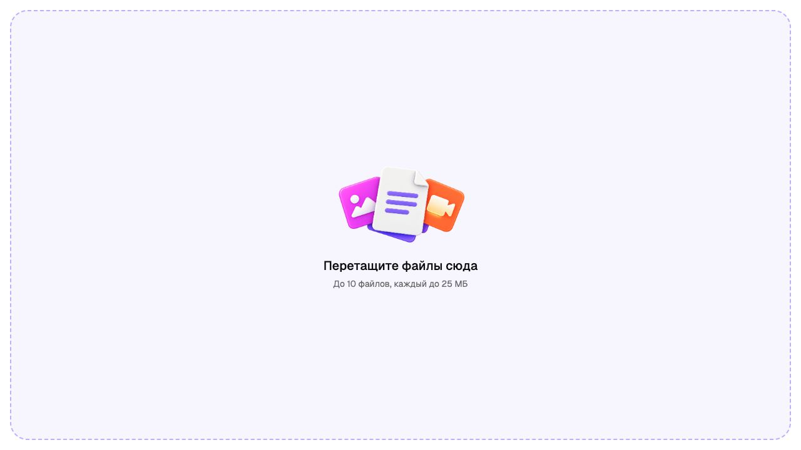
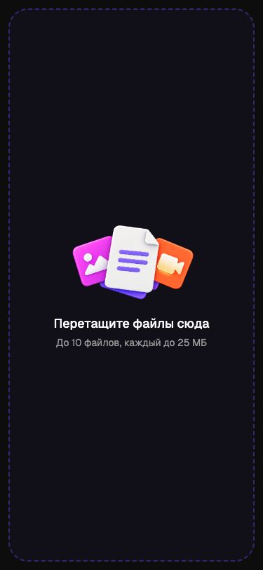

Версия 1.0 · 29 сентября 2026 · исходный commit 3631ebecb5777f59fe1e6312ef635137ec1b7014.
Пакет описывает текущий новый интерфейс ai-hub: как он выглядит, как работает, из чего собран и как продолжать его разработку, сохраняя дизайн. Пользователь подтвердил проект и попросил полный handoff для фронтенда. Отдельно включены руководства по созданию иконок инструментов и предметных иллюстраций.
Начать чтение:открыть собранный справочник. Его можно открыть локально без сервера. Markdown ниже — редактируемые первоисточники. Для передачи команде подготовлен ZIP с документацией, референсами и зафиксированными исходниками прототипа; разверните архив целиком, чтобы работали относительные ссылки.
Реализовано / baseline / факт — обнаружено в исходниках этого commit; скриншот и ручная проверка имеют отдельную отметку.
Правило — действующее требование CLAUDE.md или прямое пожелание пользователя. Имеет приоритет над случайным расхождением в прототипе.
Требование к production / рекомендация — предложенное в handoff поведение для реального сервиса. Не означает, что backend уже существует или решение утверждено командой.
Gap / открытый вопрос — отсутствующая реализация или противоречие. Указан следующий шаг; наличие такого пункта не мешает начинать независимую вёрстку.
Скриншоты фиксируют внешний вид конкретного состояния, исходники — детали поведения, CLAUDE.md — правила расширения системы. Устаревшие ai-hub-v2, molecula-app*, архивные скриншоты и ранние планы не являются эталоном этого handoff. Ссылка на Figma с актуальной версией для этой работы не предоставлена: данный пакет опирается на работающий кодовый прототип.
Границы готовности
UI можно передавать в разработку по этому пакету. Сам прототип не является готовым production frontend: вход, генерации, биллинг и часть действий имитируются; серверный контракт не предоставлен. Это описано в документе 05, а не скрыто за внешне рабочими кнопками.
Проверено при подготовке: 75/75 unit-тестов, production build и lint без ошибок; lint сообщает 31 предупреждение, сборка — о крупных chunks. Свежая визуальная проверка и её границы перечислены в документе 07. Полный accessibility audit, работа настоящих API и реальных мобильных браузеров этим не подтверждаются.
Критичные отличия от желаемой реализации: пустой /projects; несогласованность некоторых табов с правилами; демо-сессия без изоляции данных по аккаунтам; отсутствие настоящих платежей, генераций и музыкального playback. Детальные записи и критерии закрытия — в 02–06.
Маршрут чтения для команды
Frontend lead: 01 → 05 → 06, затем распределить работу по экранам из 02.
UI frontend: 03 → 04 → нужный экран 02 и его снимок 07.
Дизайнер / автор графики: 03 → 08 / 09; использовать приложенные PNG-референсы.
QA: 02 → 06 → 07; проверять и чистую сессию, и заполненные состояния.
Изменение дизайна нужно отражать в соответствующем документе, компоненте и story. После изменения исходной версии обновить commit, manifest, затронутые снимки и HTML командой из 01. Публикация приложения в эту задачу не входит.
AI Hub — единое рабочее пространство для текста, изображений, видео и музыки. Корневой экран / сразу открывает новый текстовый чат. Отдельной маркетинговой главной в этой версии нет. Постоянная боковая навигация связывает инструменты, историю и проекты; контент меняется внутри общего рабочего пространства.
Нейтральные поверхности и спокойная типографика отделяют рабочие элементы от цветных иконок инструментов. Основной UI-акцент — фиолетовый primary. Композер имеет специально согласованное исключение: микрофон, отправка и стоп используют контрастный foreground/background. Продуктовые иллюстрации и объёмные иконки не заменяют функциональные векторные иконки.
На телефоне сохраняется та же информационная архитектура, но sidebar сдвигает рабочее пространство, большинство диалогов становятся нижними листами, а вложенные меню открываются в пределах доступной ширины. Пользователь не должен терять текущий черновик при просмотре ролей или отмене входа.
Что использовано и для чего
Версии ниже — линии технологий из проекта, точные зафиксированные версии всех прямых зависимостей находятся в source-manifest.json и package-lock.json. Пакеты не нужно обновлять до latest при переносе: используйте lockfile.
Технология
Роль в интерфейсе
Как применять
React 19 + TypeScript
Компоненты, hooks, типизированные UI-состояния
Фичи в src/components, state в src/hooks, общие типы около данных
Vite 8
Разработка, сборка, base path
@ указывает на src; URL ресурсов проходят через withBasePath
Tailwind CSS 4
Layout, адаптивность, состояния
Семантические классы и CSS custom properties; избегать собственных цветов в компонентах
shadcn/ui, preset radix-nova
Локальная библиотека UI
Компоненты уже скопированы и изменены в src/components/ui; это и есть эталон
Radix UI + Vaul
Поведение popup, dialog, drawer, focus и dismiss
Использовать проектные обёртки AppSheet, AppMenu, ConfirmDialog
CVA + clsx + tailwind-merge
Варианты компонентов, условные классы, разрешение конфликтов
buttonVariants и cn; не размножать произвольные варианты на экранах
Geist Variable
Основной шрифт, локально из npm
Подключён в index.css, не заменять внешним CDN
Hugeicons
Монохромные функциональные иконки
HugeiconsIcon, общий ICON_STROKE; символы искать в free-наборе
public/, реестр файлов; не путать референсные демо-медиа с пользовательскими файлами
Sonner
Неблокирующая обратная связь и действия в тостах
Через ui/sonner, портал в body, тема следует приложению
react-markdown + remark-gfm
Текст ответов и Markdown-артефакты
Через компоненты чата; не добавлять произвольное выполнение HTML модели
PDF.js + Mammoth
Просмотр PDF / DOCX
Ленивые viewer-компоненты с загрузкой и ошибкой; отдельно от композера
img-fx + Three.js
Эффект появления сгенерированной картинки
Не базовый UI-kit; учитывать вес и reduced motion
Storybook 10
Каталог примитивов, тем и состояний
Соседний .stories.tsx у каждого ui/*; проверять light/dark и mobile
Node test runner + oxlint + tsc
Проверка логики, линтинг, типы
Скрипты package.json; это не замена браузерной приёмке
Установленная зависимость не равна используемому паттерну. Например, next-themes есть в package.json, но тема приложения реализована собственным hook и классом .dark; не оборачивать приложение вторым theme provider.
text-composer.tsx, ранние прототипы из соседних директорий и неиспользуемые декоративные компоненты не следует выбирать как точку старта без проверки импортов. Фактическая цепочка от main.tsx и App.tsx определяет текущую реализацию.
Запуск на машине разработчика
Из корня ai-hub, Node.js 24, npm:
npm ci
npm run dev -- --host 127.0.0.1 --port 5192 --strictPort
Открыть локальное приложение. Порт 5192 закреплён в CLAUDE.md; голый npm run dev может выбрать стандартный порт Vite.
В отдельном терминале:
npm run storybook
Storybook содержит секции «Проект» и «UI», переключатель темы и viewports 375 / 1100. Наличие stories подтверждено статическим инвентарём; все stories не проходились вручную в этой задаче.
npm test
npm run build
npm run lint
В прототипе новая сессия гостевая. Демонстрационный вход через Google не обращается к Google и показывает demo@gmail.com. Email-flow также локальный: 1234 проходит, 0000 демонстрирует ошибку; это QA fixtures, не контракт реальной авторизации. Работать с тестовыми файлами и демоданными на отдельном origin/profile, чтобы не затронуть сохранённые черновики дизайнера.
Перенос в основной frontend
Сначала перенести токены, font, иконки и проектные UI-обёртки вместе с патчами. Не подменять их свежими стоковыми shadcn-компонентами.
Собрать shell и routing, затем композер и чат, после — студии, роли, проекты и остальные overlays. У каждого экрана должны быть светлая и тёмная темы и мобильная компоновка.
Подключать реальные сервисы через границы, описанные в 05. Демо hooks показывают UX, но не задают архитектуру backend и права доступа.
На каждом этапе сверять снимок и поведение из 02, затем критерии из 06. Ошибки прототипа не переносить как обязательное требование.
Из текущего проекта не следует, что production обязан использовать именно History API без router. Можно встроить экраны в существующий router основной кодовой базы, сохранив публичные пути, back/forward, прямой вход и ожидаемое восстановление состояния.
Обновление документации
Исходные документы — Markdown в этой папке. Для обновления HTML и статических реестров:
node docs/frontend-handoff/build-handoff.mjs
Скрипт не снимает новые скриншоты и не меняет приложение. После правок UI снимки обновляются вручную с указанным viewport и состоянием. Manifest фиксирует commit и хеши исходников; незакоммиченные изменения требуют отдельной записи в handoff. Не выдавать старый снимок за проверку нового commit.
В проекте push в main запускает GitHub Pages. Подготовка или пересборка handoff не является разрешением на push/deploy; публикация требует отдельного запроса пользователя.
Дата: 29 сентября 2026. Основа: локальный ai-hub, commit 3631ebe. Документ описывает текущий исполняемый интерфейс; комментарии в исходниках не считаются реализованным поведением, если обработчики работают иначе.
Обозначения: Эталон — поведение, которое уже можно увидеть в прототипе и следует сохранить при переносе, кроме явно перечисленных ошибок и расхождений. Демо — имитация работы сервиса, которую нельзя переносить как готовую интеграцию. Требуется для production — недостающий сценарий или решение; это не утверждение, что он уже реализован или согласован. Если код расходится с действующим правилом CLAUDE.md, при реализации действует правило, а факт из кода фиксирует дефект baseline. Визуальные токены и точные размеры описаны в соседней спецификации дизайн-системы; здесь зафиксировано поведение.
1. Карта экранов и адресов
Адреса ниже указаны относительно base path приложения. На GitHub Pages и других размещениях префикс добавляет withBasePath. Внутреннее состояние active синхронизируется с History API, отдельной библиотеки роутинга нет.
Эталон навигации: переход на другой инструмент, чат, проект или раздел добавляет запись истории; Back/Forward восстанавливает экран. Название вкладки — <экран или название сущности> · AI Hub. Неизвестный или удалённый ID возвращает на / через replaceState. Для вкладок проекта используется replaceState: переключение «Чаты → Медиа → Файлы» не засоряет историю. Вкладка и позиция прокрутки проекта дополнительно запоминаются в текущей сессии приложения.
Пробел:/projects распознаётся routes.ts, но для него нет экрана и нет записи в SECTION_TITLE; прямой вход оставляет пустую рабочую область. Общий экран списка проектов нельзя считать частью готового дизайна. До релиза нужно либо направлять этот URL на поддерживаемый экран, либо отдельно спроектировать список.
2. Общие правила поведения
Desktop начинается с 768px; ниже — мобильная оболочка. Проверять ширины по спецификации дизайн-системы, а также смену breakpoint с незавершённым вводом.
Неконфирмационные диалоги используют AppSheet: обычно центрированная модалка на desktop и нижний лист на mobile. Подтверждения — ConfirmDialog. Уже существующие полноэкранные исключения: просмотр фото/видео, тарифы, мобильный вход.
Фокус при закрытии возвращается к инициатору, если он существует. Каталог ролей, детали и отзыв используют последовательную навигацию с кнопкой назад. В фоне открытого каталога рабочая область inert.
Иконочные действия имеют русские aria-label. Выбранные значения объявляются через соответствующие aria-*; статус загрузки — через role=status / aria-live там, где это реализовано.
На desktop вторичные действия строки показываются по hover/focus; на touch доступны постоянно. Нельзя проектировать обязательный сценарий только через hover.
Открыт один обычный поповер/меню. Переключение соседних триггеров должно работать с первого клика; мобильные подменю заменяют содержимое меню и имеют строку возврата.
Копирование использует clipboard.ts. После каждого успешного копирования общий helper показывает один success toast. У CopyButton также появляется галочка; успех озвучивает Sonner, локальный live-region сообщает только об ошибке.
Ввод с клавиатуры, переход между вкладками и частые действия не должны зависеть от проигрывания анимации. Режим reduced motion обязателен; анимационные детали — в дизайн-системе.
S01. Оболочка, сайдбар и аккаунт
Состав. Бренд «Молекула» открывает свежий текстовый чат. В шапке сайдбара — поиск и управление сворачиванием, ниже «Новый чат». Навигация содержит роли и инструменты «Фото», «Видео», «Аудио»; инструмент «Текст» представлен строкой «Новый чат» и повторно не выводится. «Больше» раскрывает «Карусель» и «Тренды», после раскрытия называется «Меньше». Названия и описания инструментов берутся из tools.ts.
Desktop: сайдбар сворачивается в rail; списки сущностей исчезают из tab-порядка. Сворачивание возвращает прокрутку навигации к началу. Раскрытие секций «Закреплённые», «Проекты», «Недавние чаты» и «Больше» сохраняется локально.
Mobile: бургер открывает меню со сдвигом рабочей области. Нажатие пункта навигации закрывает меню. Бургер остаётся доступен для закрытия; закрытый меню-контент не должен оставаться доступным для клавиатуры. Кнопки «Новый чат» в мобильной шапке нет на /, /photo, /video и странице проекта. В чате проекта эта кнопка открывает страницу проекта, где можно начать новый чат. В шапке чата проекта присутствуют ссылка на проект и меню чата.
Списки. В недавних чатах — активные текстовые чаты вне проектов, кроме закреплённых. Фото/видео имеют студийную историю. Закреплённая сущность появляется в «Закреплённые» и уходит из собственного верхнего списка; чат проекта сохраняется в дереве своего проекта. Открытый проект раскрывает дочерние чаты; ручное сворачивание имеет приоритет. Пустой проект: «Пока нет чатов». Без проектов показывается строка «Новый проект», без отдельного заголовка. Пустая история: «Здесь появятся ваши чаты».
Гость: существующие сущности Hub и песни скрываются; вместо аккаунта — «Войти». При свёрнутом desktop-сайдбаре кнопки входа внизу нет. В правом верхнем углу рабочего экрана вместо баланса — переключатель темы.
Аккаунт после входа: имя и тариф; меню открывает «Профиль», «Подписка», «Партнёрская программа», «История списаний», «Память», подменю «Тема» и «Выйти». Темы: «Системная», «Тёмная», «Светлая»; системная следует ОС. Выход удаляет демосессию и возвращает на новый чат; сохранённые браузерные данные не очищает.
Приёмка S01:⌘K/Ctrl+K открывает и повторно закрывает поиск; ⌘⇧O/Ctrl+Shift+O открывает новый чат. Длинные имена обрезаются, действия не выталкиваются. При открытом мобильном меню нельзя активировать закрытые им элементы рабочей области. Тема не сбрасывается при переходах.
S02. Гостевой режим и вход
Гость может открыть публичные студии и набрать запрос. Защищённые кнопки, настройки, вложения, выбор модели, отправка и создание проекта вызывают вход. Защищённые разделы: роли, профиль, подписка, партнёрская программа, списания, память. Прямой вход гостя в такой раздел приводит на новый чат с открытой авторизацией.
Два контекстных варианта одного сценария:
Контекст
Заголовок первого шага
Обещание в бейдже
Фото (nano)
«Попробуйте нейросеть Nano Banana бесплатно»
«1 бесплатная генерация»
Другие (models)
«ChatGPT, Claude и Gemini — в одном окне»
«1 бесплатный запрос»
Способы входа: «Войти через VK ID», «Войти через Яндекс», «Войти через Google», разделитель «или», поле «Электронная почта», «Продолжить». Кнопка выключена при пустом email. Невалидный адрес: «Проверьте адрес — кажется, в нём опечатка.»; редактирование снимает ошибку. Пока выполняется job, поля и отправка заблокированы, выбранное действие показывает spinner и текст процесса.
Код: заголовок «Введите код из письма», цифровой ввод до 6 символов, продолжение доступно от 4. Только цифры; autocomplete=one-time-code. Есть возврат «Назад к способам входа». Повторная отправка блокируется на 30 секунд: «Отправить повторно через N с». После неверного кода: «Неверный код подтверждения. Попробуйте ещё раз.». На desktop фокус в поле кода; мобильный экран не должен автоматически провоцировать лишний скачок клавиатуры.
Успех: «Готово, вы вошли», «Начать работу», статус «Возвращаемся к вашему запросу…». Лист закрывается по кнопке либо автоматически примерно через 3,2 секунды. Исходный запрос остаётся в композере. Прерванное защищённое действие автоматически не повторяется: код не хранит callback исходной отправки.
Демо: письма и OAuth не вызываются; на экране прямо написано «Демонстрационный вход без отправки писем», в описании кода указан 1234. Социальный вход создаёт локальную демосессию. Обещание бесплатного запроса не связано с реальным начислением.
Требуется для production: согласовать реальную авторизацию, отказ провайдера/отмену OAuth, истёкший код, ограничение повторных отправок, сетевую ошибку и возвращение к исходному действию. Нельзя показывать успешный вход до подтверждения сервера. Юридический текст сейчас не содержит рабочих ссылок.
S03. Новый текстовый чат
В центре — «Что сделаем сегодня?», быстрые действия, композер с «Спросите что-нибудь…»; под композером — «Выбрать проект» и «Загрузить файлы». Отдельной домашней страницы или карточек выбора режима над композером нет. По умолчанию используется Молли; модели выбираются внутри инструмента «Текст».
Быстрое действие
Текст, которым заполняется поле
Написать пост
Напиши пост для соцсетей на тему:
Придумать идеи
Придумай 10 идей для
Улучшить текст
Улучши этот текст: сделай его понятнее и живее, смысл сохрани. и два перевода строки
Составить план
Составь пошаговый план, как
Выбор заполняет поле и ставит курсор в конец, ничего не отправляет. Быстрые действия остаются при наборе. Расхождение: исполняемый fill() заменяет имеющийся текст без отмены, несмотря на обещание undo в комментарии. Рекомендуемое production-поведение — сохранить предыдущий запрос и предложить «Вернуть»; это доработка, не готовая возможность.
В меню проекта можно выбрать существующий активный проект, создать новый и сразу выбрать его, либо снять выбор через «Без проекта». Если выбранный проект удалён или архивирован до отправки, новый чат создаётся вне проекта.
Отправка: создаётся чат, его заголовок строится из первых слов запроса (до 40 знаков с обрезкой по границе слова и многоточием); фиксируются тип text, выбранные модель и настройки. После отправки открывается /c/:id. Роль учитывается в локальном счётчике использования. Само открытие новой пустой формы чат в истории не создаёт.
Черновик: текст, файлы, кадры и выбор моделей/настроек переживают переключение инструментов внутри текущего экземпляра NewChat, включая переход в аудиостудию и назад. Новый «Новый чат» намеренно сбрасывает экземпляр. Это не серверный autosave и не обещание восстановления после перезагрузки или ухода в другую сущность.
Приёмка S03: быстрый шаблон не отправляется сам; выбранный проект получает ровно один новый чат после отправки; возвращение из закрытого каталога ролей сохраняет черновик; явный запуск роли из каталога начинает новый черновик.
Справа микрофон. Одни вложения не активируют отправку.
Есть непустой текст
Пилюля ориентировочной стоимости и кнопка отправки.
Выбран видео-шаблон
Отправка показана и без текста; отсутствие фото проверяется при попытке.
Чат генерирует ответ
Вместо отправки — «Остановить генерацию». Кнопки модели/настроек/вложений блокируются; текст следующего запроса можно набирать, но он не отправится до окончания.
Идёт диктовка
Микрофон остаётся доступным для остановки, textarea disabled.
Desktop: Enter отправляет, Shift+Enter добавляет строку; IME composition не отправляет. Устройства с coarse pointer: Enter добавляет строку, отправка только кнопкой. Escape останавливает диктовку. Autofocus не должен поднимать touch-клавиатуру при простом открытии экрана.
После успешного вызова обработчика отправки композер очищает текст, файлы, кадры, шаблон и фото. Модель/настройки сохраняются. Демо-ограничение: сейчас очищение происходит синхронно, без подтверждения серверного принятия; в production запрос и вложения должны быть восстановимы при отказе отправки.
Модели и настройки
Пикер модели на desktop — меню с поиском, на mobile — нижний лист. Он показывает модели только текущего типа. Группы без запроса: «Рекомендуем» и «Другие нейросети», без дублирования моделей; при поиске фильтруется единый список по имени, семейству, вендору и описанию. При открытии видна текущая модель с галочкой; список прокручивается к ней, фокус остаётся в поиске. Цена в строках модели не показывается.
Переключение модели сохраняет текст/вложения, но переинициализирует её настройки; текстовая роль сохраняется. Несовместимые вложения не удаляются молча: проверка перед отправкой объясняет, что нужно убрать или сменить модель. Для точных доступных вариантов использовать функции modelSettings, barSettings, menuSettings, normalizeSettings, а не общий набор одинаковых контролов для всех моделей.
Текст: отдельная «Роль», у Молли дополнительно «Режим рассуждения» — «Быстро», «Оптимально», «Глубоко». Мобильный выбор рассуждения — SettingsSheet.
Фото: формат/разрешение/качество/количество появляются только по профилю выбранной модели.
Видео: формат/длительность/разрешение/звук/контекстные изображения — по профилю; у кадровых моделей специальные слоты начального/конечного кадра.
В новом текстовом чате «+» предлагает «Создать изображение», «Создать видео», «Создать музыку»; в открытом чате и на странице проекта тип фиксирован. Не добавлять глобальные табы типов в пикер модели.
Настройки из строки продублированы в «+» по возможностям модели; роль находится в собственном пикере.
Стоимость в отправке — оценка estimateCost, доступное имя кнопки: «Отправить — примерно N молекул» с правильным склонением. Демо не списывает баланс и не проверяет его достаточность.
Вложения
Desktop «+»: «Загрузить фото и файлы». Mobile: источники «Камера», «Галерея», «Файлы» через нативный файловый picker. Камера использует capture=environment. Дополнительно поддерживаются paste файлов и drop на окно; на вкладке «Файлы» проекта drop перенаправлен в библиотеку проекта.
Общие ограничения: максимум 10 файлов, 25 МБ на файл; конкретная модель может уменьшать maxFiles или отключать вложения. Фото/видео-композер принимает изображения. MIME восстанавливается по расширению, если браузер не передал его. Строгое ограничение формата в интерфейсе не заменяет серверную проверку.
Отказ
Текст / результат
Модель не принимает файлы
«Эта модель не поддерживает вложения. Выберите другую модель.»
После смены модели остались запрещённые файлы
«Эта модель не поддерживает вложения. Уберите файлы или выберите другую модель.»
Файл больше лимита
Файл «<имя>» больше 25 МБ
Превышено количество
Можно прикрепить до N файлов / перед отправкой Для этой модели можно прикрепить до N файлов
Не изображение в фото/видео
«Эта модель принимает только изображения»; неподходящие файлы пропускаются
Начальный кадр обязателен
«Добавьте начальный кадр — с него начнётся видео»
Неподходящий кадр
«Кадр — это картинка: PNG, JPG или WebP»
Фото отображаются миниатюрами, документы — карточками; поддерживаемые форматы открываются во вьювере, удаление вложения не удаляет файл на устройстве. Отключённый пункт вложений объясняет ограничение toast при нажатии.
Диктовка
Используется браузерный SpeechRecognition с ru-RU; речь дописывается к тексту, который был до включения микрофона. Отправка, уход со скрытого рабочего экрана и размонтирование останавливают распознавание; поздний результат не должен заполнять уже отправленный запрос.
Нет API: «Голосовой ввод недоступен в этом браузере» / «Откройте Молекулу в Chrome или Safari.». Нет разрешения: «Разрешите доступ к микрофону в настройках браузера». Ошибка: «Не удалось распознать речь. Попробуйте ещё раз.» или «Не удалось включить микрофон. Попробуйте ещё раз.». Реальную матрицу поддерживаемых браузеров и разрешений проверить на целевых устройствах.
Приёмка S04: изменение модели не теряет черновик; submit учитывает ограничения текущей модели; подставленная идея не запускает запрос; Enter во время IME не отправляет; файлы не отправляются без текста, кроме требуемого фото выбранного видео-шаблона; повторная отправка во время активного чат-ответа не создаёт дубликат.
Загрузка истории: пока список пуст и состояние loading, показывать spinner + «Загружаем историю…». При error — «Не удалось загрузить историю», «Попробуйте открыть сообщения ещё раз.», кнопка «Повторить». Действительно пустой чат: название и «Здесь пока нет сообщений. Напишите первое ниже.».
Сообщения: пользовательский текст — справа; действия «Копировать», «Изменить». «Изменить» только переносит текст в текущий композер: история и последующие сообщения не переписываются, ветвление не реализовано. Изображения пользователя — миниатюры без подписей; видео/аудио имеют нативные controls, документы открываются в панели.
Ответ ассистента: логотип и статус/имя модели, затем текст, изображение или карточка документа. Текущая модель состояния:
thinking и drawing показывают процесс; streaming выводит текст постепенно. «Остановить генерацию» сохраняет уже показанный текст, убирает незавершённую картинку и непоказанный документ; отображает «Ответ остановлен». При перезагрузке незавершённый демоответ становится stopped.
Завершённый ответ: копирование, «Хороший ответ», «Плохой ответ», «Повторить»; готовая картинка дополнительно скачивается. Повторная оценка того же типа снимает её. Новый лайк/дизлайк показывает «Спасибо за отзыв». Повторить заменяет выбранный ответ на новый по тому же предшествующему запросу и той же модели; во время другого ответа повтор недоступен. Версий ответа и переключателя между ними нет.
Список сохраняет возможность читать историю: кнопка прокрутки к новым сообщениям появляется по состоянию MessageScroller; нижняя область резервирует реальную высоту композера, чтобы последний ответ не оказался за полем ввода. Чат проекта имеет ссылку на родителя и общее меню сущности.
Документ рядом с чатом: desktop — изменяемая по ширине панель справа, начальное разделение 50/50, пользовательский диапазон документа 35–65%; «Развернуть документ» занимает всю рабочую область, «Свернуть» возвращает предыдущую ширину. Escape закрывает панель и возвращает фокус. Mobile — лист высотой 85dvh.
В панели: имя/формат/размер, скачать, копировать текст, закрыть. Для Markdown табы «Документ» и «Исходный текст»; текстовый файл — моноширинный текст; PDF/DOCX — просмотр страниц. Прокрутка сохраняется по ID файла. Текстовые Blob больше 2 МБ не читаются в preview и предлагаются к скачиванию. Отсутствующий файл: «Файл недоступен», пояснение и «Повторить»; ошибка preview не должна прятать скачивание доступного оригинала.
Демо: ответы выбираются из локальных заготовок и таймеров, серверного стрима нет. Нет состояния ошибки самой генерации; загрузочная ошибка истории — отдельный сценарий и не заменяет её. Настройки роли и контекст проекта не исполняются моделью.
Требуется для production: добавить состояния failed, отмены, сетевого обрыва и восстановления потока; защититься от двойной отправки; явно определить последствия редактирования старого запроса и перегенерации середины истории. Предлагаемые тексты ошибок нужно согласовать и реализовать, а не выдавать демотаймер за успешный ответ.
S06–S07. Фото и видео
Общий принцип: у студий собственная лента результатов. Генерация не создаёт чат и не уводит на /c/:id. Табы: «История | Стили» для фото, «История | Шаблоны» для видео. Выбор таба сбрасывает preview идеи и прокрутку к началу. Отдельного community-раздела нет.
История пуста: название «Фото» / «Видео», иконка инструмента, веер примеров; композер ниже. Фото-placeholder «Опишите картинку», видео — «Опишите сцену». Наведение на идею показывает приглушённый preview в пустом поле, но не меняет текст. Введённый текст скрывает hover-preview. Вкладка идей содержит сетку именованных карточек.
Фото-стиль: выбор заполняет prompt, а при наличии заданного формата — нормализует формат. Свой снимок пользователь добавляет через «+». Дополнительной строки «Прикрепите фото» в текущем дизайне нет.
Видео-шаблон: выбор помещает в композер карточку шаблона и слот фото. Prompt шаблона скрыт; textarea «Добавьте детали, если нужно». Первое уже прикреплённое изображение может стать фото шаблона; добавление через paste/drop/«+» также заполняет пустой слот. Удаление шаблона возвращает его фото в обычные вложения и фокус в поле. Текст пользователя при отправке дополняет prompt шаблона.
Попытка отправить шаблон без фото сохраняет всё содержимое, выделяет слот ошибкой и показывает «Шаблону нужно ваше фото» / «Добавьте его, чтобы создать видео.». Для моделей с кадрами фото шаблона формирует начальный кадр. Вне шаблона допустимость начального/конечного кадра зависит от версии модели. Для Veo Omni есть подсказка «До 4 изображений. Последнее — начальный кадр.».
После отправки: открыть «История», вставить ожидающие плитки в начало и показать их; фото создаёт выбранное число результатов в пределах maxOutputs, видео — один. Композер очищается и остаётся доступен для следующего запроса. В студиях не передаётся generating/onStop общего чат-композера: общей блокировки до завершения партии и кнопки остановки партии сейчас нет.
Лента: изображения/видео разных форматов собраны в justified rows; новые выше. На desktop в истории с результатами есть ползунок «Размер превью», пять дискретных значений; выбор сохраняется локально и общий для студий. В mobile ползунка нет. Неактивный мобильный таб сокращается до иконки, доступное название сохраняется.
Плитка: ожидание → готовый результат; готовая плитка открывает S08. Видео-превью воспроизводится на hover; touch и reduced motion не должны требовать hover для использования. Плитка показывает принадлежность проекту, если она есть; действия доступны через «⋯». Desktop может показывать shortcut «Повторить запрос».
Действие
Результат
Повторить запрос
Только возвращает prompt в композер. Старые модель/настройки/референсы автоматически не восстанавливаются.
Скачать
Скачивает конкретный результат.
Добавить в проект → существующий
Переносит связь одной плитки, не всей партии; toast с «Открыть» ведёт на «Медиа» проекта.
Добавить в проект → Новый проект
Создаёт и связывает проект, пользователь остаётся в студии.
Убрать из проекта
Снимает связь, результат остаётся в студии; toast предлагает «Отменить».
Удалить фото/видео
Убирает результат без ConfirmDialog; toast «Фото удалено» / «Видео удалено» с «Отменить».
Завершение за пределами открытой студии показывает «Фото готово / Фото готовы / Видео готово» с «Открыть». На активном экране этой ленты лишний toast не показывается. Аналогично учитывается открытая вкладка «Медиа» проекта.
Демо: результат берётся из каталога локальных медиа; таймеры имитируют ожидание. Фото, кадры и вложения запроса не передаются генератору результата. После reload сохранённые generating считаются готовыми; это неприемлемая логика восстановления реального job. Нет очереди, процентов, отказа модели, частичной ошибки партии или retry failed tile.
Приёмка S06–S07: фото-стиль только заполняет поле; видео-шаблон требует фото; отправка остаётся в студии; результат можно открыть/скачать/назначить в проект; повтор не должен запускать списание автоматически. Генерация в рамках открытой вкладки приложения продолжается при уходе в другой раздел.
S08. Просмотр файлов и медиа
Вход возможен из результата студии, картинки ответа, вложения композера и файла проекта. Формат определяется через viewable.ts.
Фото/видео: полноэкранный тёмный слой независимо от текущей темы. Имя сверху; desktop — отдельное скачивание, mobile — «Действия с файлом» → «Скачать»; для сгенерированного результата добавляются его действия с проектом/повтором/удалением. Изображение вписывается целиком, не обрезается. Клик по свободной сцене закрывает, клик по самому изображению — нет. Видео с нативными controls, autoplay, loop, playsInline.
PDF/DOCX: обычный AppSheet с именем в шапке; документ прокручивается внутри, жест прокрутки страниц не должен перетягивать лист. Тяжёлые просмотрщики загружаются лениво; во время загрузки — ViewerLoading.
Ошибка изображения/видео: объяснение о невозможности показать формат в браузере. Пробел: desktop-кнопка download скрывается при failed; без пользовательских actions меню также может отсутствовать. Production должен оставить доступный путь скачать оригинал, если ресурс существует.
Другие форматы: в файлах проекта открытие сразу скачивает; не добавлять фиктивный viewer. Для документов чата действует отдельная панель S05.
В исходниках нет zoom/pan, карусели соседних медиа и редактирования прямо во вьювере. Их нельзя трактовать как часть текущего scope.
S09. Аудиостудия
Desktop: слева форма создания, справа библиотека. Mobile: «Создать» и «Проекты»; после создания открывается библиотека выбранного проекта. Это музыкальная студия Suno, а не экран озвучки текста; оставшиеся audio-placeholder общего композера не определяют основной сценарий /audio.
Форма
Общие контролы: «Авто | Детальный», версия Suno, «С вокалом | Инструментал», необязательное название песни до 80 знаков, «Сохранить в» с выбором общего проекта / «Без проекта» / «Новый проект». По умолчанию «Без проекта». Открытие проекта в библиотеке выбирает его в форме; удалённый/архивированный выбранный проект заменяется на «Без проекта» при создании.
Режим
Поля и действия
Готовность
Авто
«Описание песни», до 500 знаков; «Случайная идея»; четыре предложения; «Другие предложения»
У инструментального трека поле lyrics disabled с «В инструментальном треке слов нет»; ранее набранный текст сохраняется в state. Стиль ограничен 1000 знаков у новых версий и 200 у Suno V4/V3.5; счётчик виден. При смене на более строгую версию переполнение обрабатывается текстом «Сократите стиль до N символов для <версия>», введённое не обрезается молча.
Продвинутые настройки: пол вокала «Любой / Муж / Жен», «Сила стиля», «Креативность», «Аудио-референс» (0–100%, шаг 5), «Избегать стилей». Пробел: регулировка «Аудио-референс» есть, загрузки аудиореференса в этой форме нет; не добавлять неподтверждённый upload. «Написать черновик текста» и «Улучшить стиль» используют локальные заготовки, не AI-запрос.
«Создать» закреплено под формой, показывает стоимость. Создаёт две версии песни, очищает описание/название/lyrics/styles/negative, сохраняет выбор модели, режима и проекта. Замена непустого описания идеей/черновиком предлагает toast «Текст описания заменён» / «Текст заменён» с «Вернуть».
Библиотека
Отображает общие проекты Hub, у которых есть песни, и «Без проекта» при наличии несвязанных песен. Новый пустой проект можно открыть сразу после создания, но он не обязан появляться в общем списке до первой песни. Архивные проекты с песнями остаются в библиотеке с отметкой «в архиве».
Поиск по названию проекта, сортировки «Новые», «Старые», «По названию». «Без проекта» первым, если соответствует поиску. Поиск без совпадений: Проектов с «<запрос>» нет. Попробуйте другое название.. Кнопка «Создать новый проект» остаётся доступна. Внутри проекта — возврат «Все проекты», заголовок, счётчик готовых песен, список по дате; пусто: «Здесь появятся песни проекта» и инструкция создать слева / во вкладке «Создать».
Песня generating: spinner, «Создаём песню…», нет воспроизведения и меню готового трека. ready: обложка, название, теги, длительность, play/pause, меню «Переименовать», перенос в проект, удаление. Переименование — отдельный лист, максимум 80 знаков. Удаление через «Удалить песню?» с предупреждением о невозможности восстановления. Проект из музыкальной библиотеки можно переименовать или открыть на «Медиа»; удаления всего проекта в её локальном меню нет.
Демо: две версии появляются по таймерам; play/pause переключает только playingId и эквалайзер, аудиофайла и реального воспроизведения нет. Ошибки генерации/плеера и скачивание песни не реализованы. После перезагрузки незавершённые песни объявляются готовыми. Текущие мобильные табы используют variant=line — дефект относительно правила пилюль в CLAUDE.md. При production-реализации использовать общий вид M без подчёркивания; это уже действующее правило, дополнительное продуктовое решение для него не требуется.
Приёмка S09: смена «Авто/Детальный» сохраняет поля; создание выдаёт две записи и открывает их группу; активная песня одна; удаление проекта сохраняет песни в «Без проекта»; готовность вне студии сопровождается toast с переходом, внутри — нет.
S10. Страница проекта
Шапка: иконка открывает оформление, название — «Настройки проекта», «⋯» — общее меню проекта плюс «Инструкции». Desktop-композер стоит под шапкой; mobile закреплён снизу. Режим только text, без переключения на генерацию фото/видео/аудио. Placeholder: desktop «Начните новый чат в проекте», mobile «Начните чат в проекте».
Чаты: активные чаты проекта, сортировка по updatedAt от новых к старым; заголовок, одна строка preview, дата, меню. Вся строка открывает чат; дата не перекрывает кликабельную область. Пусто: «Здесь появятся чаты проекта», «Напишите первое сообщение — Молли учтёт инструкции и файлы проекта.». Это обещание контекста требует backend-интеграции и не работает в текущем генераторе демоответов.
Медиа: фото, видео и песни этого проекта в общей сетке по дате. Фильтр «Все / Фото / Видео / Песни» появляется, когда есть медиа. Пустой проект: «Здесь появятся фото, видео и песни проекта», «Добавляйте их из студий через „Добавить в проект“» и три кнопки студий. Пустой фильтр: «Фото/Видео/Песен в проекте пока нет» и «Показать всё». Смена фильтра не анимирует плитки как будто они были перенесены. В сетке проекта нет «Повторить запрос» и отдельной генерации; меню предлагает убрать из проекта или удалить сам результат.
Файлы: S13. Общий композер остаётся на всех трёх вкладках; drop по окну на «Файлы» попадает в проект, на остальных — в сообщение.
Архивный проект по прямому URL / Back: вместо композера «Проект в архиве», «Восстановите его, чтобы начать новый чат.», «Восстановить». В меню восстановление заменяет архивирование. Остальная модель блокировки архивных проектов неполна: не следует из одного отсутствующего композера считать весь проект read-only.
Приёмка S10: переход в чат и Back восстанавливает вкладку/прокрутку; смена desktop/mobile не стирает проектный черновик; создание текста привязывает чат к открытому проекту; снятие медиа-связи не удаляет оригинал из студии.
S11. Создание и настройки проекта
«Новый проект»: пояснение «Чаты, фото, видео и файлы одной задачи — в одном месте.». «Настройки проекта» — без пояснения под заголовком. Форма: «Название», кнопка выбора иконки/цвета внутри поля, «Описание (необязательно)», «Отмена», основное действие «Создать проект» / «Сохранить».
Название обязательно после trim, максимум 45 знаков; счётчик появляется в последних 10 знаках. Имя автоматически выделяется при редактировании. Пустое имя блокирует submit. Описание trim, пустое превращается в отсутствие значения; лимит длины описания сейчас не установлен. Сохранение закрывает лист. Выбор оформления на странице проекта применяется сразу, в форме — при сохранении формы.
Контекст создания определяет следующий шаг: из сайдбара открыть проект; из «Перенести в проект» перенести чат; из фото/видео/песни связать результат и остаться в студии; из нижней строки нового чата выбрать проект без отправки.
Inline rename в сайдбаре/строке чата: Enter или blur сохраняет, Escape отменяет и не закрывает всё мобильное меню, пустое имя оставляет прежнее. Исходник: RenameField.
Пробел: форма проекта не предупреждает о закрытии с несохранёнными изменениями, в отличие от S12. В production определить правило для формы, не предполагая существующее подтверждение.
S12. Инструкции проекта
Открываются из меню проекта, отдельной карточки инструкций на странице нет. Заголовок «Инструкции», описание «Молли учитывает их во всех чатах проекта.». Каждый вход берёт сохранённое значение, поле сохраняется только по кнопке «Сохранить». Пустое после trim удаляет инструкции.
Лимит 8 000 знаков; счётчик появляется от 7 000. При превышении поле invalid, «Сократите текст до 8 000 знаков», «Сохранить» disabled. Длина проверяется до trim, текст не обрезается автоматически.
При попытке закрыть dirty-лист (включая «Отмена» через общий dismiss): «Не сохранять изменения?», «Текст инструкций останется прежним.», «Вернуться» / «Не сохранять». «Вернуться» оставляет введённое, «Не сохранять» закрывает без записи. Успех: toast «Инструкции сохранены». Навигация с уходом со страницы снимает признак открытого листа, чтобы он не открылся сам при следующем посещении.
Приёмка S12: 7 999 / 8 000 / 8 001 знаков; отмена dirty-закрытия возвращает тот же текст; пустое сохранение снимает инструкцию; изменение здесь должно влиять на последующие проектные запросы после реализации server-контекста.
S13. Файлы проекта
Файлы здесь — общая библиотека проекта, отдельная от вложений одного сообщения. Эталон лимитов: 20 файлов по 25 МБ, ожидающие записи тоже занимают слоты. Разрешено выбрать несколько; текущий picker не ограничивает список расширений. Обрабатывать принятую часть пачки и сообщения об отклонённой части, не теряя валидные файлы.
Пусто: «Здесь появятся файлы проекта», пояснение о брифе/прайсе/примерах, «Добавить файлы». После появления файлов над списком счётчик N из 20 и та же кнопка. Архивный проект блокирует добавление этой кнопкой. Drop-overlay: «Отпустите, чтобы добавить в проект», «До 25 МБ, до 20 файлов в проекте».
Состояние строки
Содержание и действия
Запись Blob
Имя, spinner, «Добавляем…»
Готова
Иконка типа, имя, размер и дата; открыть, скачать, удалить
Toast с именем; при нехватке места — просьба удалить ненужные файлы и повторить; ожидающая строка убирается
Повторная загрузка заменяет недоступный файл под прежним ID, обновляет имя/тип/размер/дату; больше 25 МБ отклоняется. Открытие фото/видео/PDF/DOCX вызывает S08, прочих — скачивание.
Удаление: «Удалить файл?», Файл «<имя>» удалится из проекта, и Молли перестанет его учитывать. Восстановить его не получится., «Удалить». После подтверждения удаляются метаданные и локальный Blob, toast «Файл удалён».
Демо: это сохранение в IndexedDB, не загрузка на сервер и не готовый ingestion. Нет серверных состояний проверки/индексации, прогресса сети, cancel/retry загрузки. Политика форматов и использование файла в контексте модели требуют отдельного контракта. Архивный проект ещё позволяет некоторые операции с существующими файлами; read-only модель нужно определить целиком.
S14–S15. Роли
Каталог
/roles открывает AppSheet поверх предыдущего экрана. В фоне сохраняются чат/проект/композер и вложения; закрытие возвращает на них. При прямом входе фон — новый текстовый чат. В каталоге нет поиска и счётчика общего количества. Табы «Все роли / Избранные»; категории в общем меню «Все категории» + каталог из roles.ts. Desktop категория в одной строке с табами, mobile ниже. Карточки дают открыть детали, добавить/убрать избранное и начать чат.
Пустые избранные: «Ваши любимые роли будут здесь», «Нажмите на звезду рядом с ролью, чтобы быстро вернуться к ней.», «Посмотреть все роли». Нет избранных в выбранной категории: «Роли не найдены» с пояснением и «Сбросить фильтры». Reset выбирает «Все роли» и «Все категории». Категория, таб и scroll сохраняются в сессии каталога, включая возврат из деталей; после reload эти фильтры не обещаны.
Детали и запуск
Каталог → детали → отзыв — последовательные экраны одного листа, без накопления слоёв. В деталях: назад, аватар/категория, имя/описание, статистика «Сессии / Лайки / Избранное / Отзывы», «С чего начнём?» с примерами, «Что умеет», «Как получить лучший результат», «Отзывы». Описание и инструкции открыты, без аккордеонов и блока похожих ролей.
«Начать чат» запускает свежий text-draft с выбранной ролью. Клик по примеру делает то же с заполненным prompt; отправлять его автоматически нельзя. Счётчик сессий увеличивается при реальном отправлении в чат через recordUse, не при просмотре карточки. База статистики и локальные добавления сейчас демонстрационные.
Выбор роли в композере
Это другой вход: выбор изменяет текущий черновик, не создаёт чат. Desktop — popover, mobile — лист; здесь поиск «Найти роль» есть. Группы «Избранные», «Все роли» / «Найденные роли», пункт «Без роли» при пустом поиске. Выбранная роль подсвечена, при открытии прокрутка к ней. Звезда не выбирает роль и сохраняет фокус после переноса между группами. Кнопка информации открывает детали, затем возврат сохраняет поисковый запрос.
В деталях из пикера CTA «Выбрать роль», пример «Использовать этот запрос» заменяет prompt текущего черновика; уже активная роль предлагает «Вернуться к чату». На композере активная роль имеет кнопку снятия; снятие не удаляет текст. Не смешивать это с запуском нового чата из каталога.
Отзыв
Кнопка отзыва расположена в «Отзывы». «Нравится» переключает лайк; первое включение ведёт к форме отзыва, пропуск формы сохраняет лайк. «Оставить отзыв» / «Изменить отзыв» работает независимо. Сейчас отображается только сохранённый локальный отзыв пользователя, а не общая публичная лента.
Форма: «Ваш отзыв о роли», «Что понравилось?» с множественным выбором («Точные ответы», «Экономит время», «Хорошие тексты», «Понимает задачу», «Легко работать», «Много идей»), текст до 500 знаков, счётчик, «Отправить отзыв» / «Сохранить изменения», «Пропустить». Submit разрешён, если есть текст после trim или хотя бы один аспект. Успех: «Отзыв сохранён», сообщение о хранении в браузере, «Готово» возвращает в детали с сохранением scroll.
Требуется для production: серверные избранное/отзывы/статистика, ошибки записи и критерий доступа к оценке; не превращать локальный единичный отзыв в правдоподобную публичную статистику без данных.
S16. Глобальный поиск
Поиск — инструменты и названия чатов, а не поиск по тексту сообщений. Группы «Инструменты» и «Недавние чаты» при пустом запросе / «Чаты» при непустом. Инструменты ищутся также по скрытому описанию: запрос suno находит «Аудио». Чаты — по названию; название проекта тоже keyword, поэтому поиск проекта может находить его чаты. Отдельных результатов-проектов нет.
Архивные чаты исключены. Рядом с чатом проекта отображается его иконка/название, mobile оставляет визуально только иконку. Внутри фиксированной высоты фильтрация не меняет геометрию окна. Поле фокусируется сразу, «Очистить» появляется при непустом запросе и возвращает фокус в поле; штатный dismiss листа сбрасывает query. Закрытие после выбора результата управляется снаружи и не вызывает этот сброс — для production унифицировать правило повторного открытия. Нет совпадений: «Нет результатов».
Выбор результата закрывает поиск и ведёт на сущность; обычная клавиатурная навигация Command-списка должна оставаться доступной. Desktop-поиск никогда не анимируется; mobile открытие тапом — sheet, клавиатурой — без анимации.
Пробел: архивирование проекта не архивирует его чаты; поиск фильтрует только chat.archived, поэтому чаты архивного проекта могут находиться, но без проектной подписи. Не заявлять, что архив проекта исключает все дочерние чаты из поиска; поведение требует решения.
S17. Общие действия, архив и удаления
Меню чата одинаково в сайдбаре, списке проекта и заголовке: «Поделиться», «Переименовать», «Перенести в проект», «Закрепить чат / Открепить чат», «Архивировать», «Удалить». Меню проекта: «Поделиться проектом», «Переименовать проект», при необходимости «Главная страница проекта», «Закрепить / Открепить проект», «Архивировать / Восстановить проект», «Удалить проект»; на странице дополнительно «Инструкции».
Действие
Эталон результата
Отмена
Поделиться
Копирует URL /c/:id или /project/:id; доступность для другого аккаунта не создаётся
Не требуется; демо-ссылка не является публичным share
Архивировать чат
Помечает chat archived, снимает pin, убирает из активной истории
Toast «Чат перенесён в архив» → «Отменить» восстанавливает и прежний pin
Архивировать проект
Помечает проект archived, снимает pin проекта
Toast «Проект перенесён в архив» → «Отменить» восстанавливает и pin
Убрать чат из проекта
Снимает projectId; чат возвращается в общий список своего типа
Toast «Чат убран из проекта» → «Отменить»
Перенести чат в проект
Меняет связь без дублирования; выбор текущего ничего не делает
Сейчас только toast Чат перенесён в «…»
Удалить чат
Удаляет чат, сообщения/вложения и pin после подтверждения
Нет
Удалить проект
Удаляет проект, все его чаты, инструкции и файлы; фото/видео/песни отвязываются и остаются в студиях
Нет
После архивирования/удаления открытой сущности уйти с исчезнувшего экрана: чат проекта возвращает на существующий активный проект, остальные — на новый чат; при удалении самого проекта — всегда на новый чат. Toast undo не обязан возвращать на прошлый экран автоматически.
Архив: открывается из «Архив чатов» / «Архив проектов» с нужным табом. Два таба со счётчиком только при ненулевом количестве. Высота окна стабильная. Строка чата может открыть его без восстановления, восстановить или удалить навсегда. Строка проекта содержит имя, число чатов / «Без чатов», восстановление и удаление; открытия проекта из строки архива сейчас нет. Пустой таб: «В архиве пусто» и пояснение о том, какие сущности появятся здесь.
Подтверждения: «Удалить чат?» + имя + «будет удалён навсегда. Восстановить его не получится.»; «Удалить проект?» + явное перечисление удаляемых данных и сохранения медиа в студиях. Удаление песни/файла имеет собственный текст из S09/S13. Архивирование подтверждения не требует, поскольку доступен undo.
Очистить историю: инициатор в «Недавние чаты», действие disabled, когда видимый список пуст. Реализация удаляет активные текстовые чаты вне проектов, включая закреплённые; проекты, архив и чаты других типов остаются. Известное расхождение: число в подтверждении вычислено по видимому списку без закреплённых, поэтому может быть меньше реально удаляемого. Для production список-основание, счётчик и операция должны совпасть; текущую ошибку не воспроизводить как требование.
Другой пробел архива: проектное archive меняет только project.archived, не chat.archived; прямой вход в его чат остаётся возможен, и обычный ChatView не блокирует отправку по состоянию родителя. Нужна единая договорённость: архив — скрытие из организации или запрет записи. Прототип не обеспечивает второй вариант полностью.
S18. Баланс, тарифы и пакеты
Кнопка сверху справа после входа показывает 1 250 и открывает полноэкранный TariffsSheet. У гостя на этом месте тема. Баланс постоянный из tariffs.ts, не уменьшается после генераций.
Табы «Тарифы / Пакеты токенов». В тарифах переключатель оплаты за месяц/год. Месячные варианты: «Промо», «Про», «Плюс», «Эксперт», «Максимум»; годовые: «Про», «Эксперт», «Максимум». «Промо» — разовая покупка. Суммы/квоты/бейджи нужно читать из общего каталога, не пересчитывать годовую сумму умножением округлённой цены в месяц. Список пакетов тоже берётся из каталога.
«Все модели тарифа» открывает дополнительный лист со списком из общего каталога моделей, без дублей; для «Промо» видео исключено. Выбор тарифа или пакета сейчас только показывает «Оплата скоро появится» и выбранную сумму; платежа и смены тарифа нет. Кнопки политики конфиденциальности/соглашения не имеют рабочих действий.
Требуется для production: серверный баланс и его обновление, недостаточно средств, текущий/недоступный тариф, доступность моделей по entitlement, подтверждение состава покупки, платежный переход и возврат, ожидание оплаты, успех/отказ/отмена, повторный платёж и ошибки. Цены каталога — snapshot дизайна, не внешняя проверка коммерческих условий. Юридические ссылки и маркетинговые отзывы должны получить реальные источники.
Приёмка S18: годовая вкладка показывает только три допустимых тарифа; «Промо» не обещает видео; годовая сумма точная из каталога; модельный лист и тарифы закрываются предсказуемо с восстановлением фокуса; покупка в production не считается успешной по одному клику.
S19. Не реализованные разделы
«Карусель», «Тренды», «Профиль», «Подписка», «Партнёрская программа», «История списаний», «Память» выводят название и «Раздел скоро появится.». Рабочих форм/таблиц/действий там нет. /subscription — заглушка, а тарифная модалка S18 открывается отдельно по балансу. Нельзя переносить функциональность S18 в /subscription без отдельного решения.
/projects — отдельный routing-gap из раздела 1, а не готовая заглушка. Неиспользуемые text-composer.tsx, stars.tsx и другие оставленные варианты не являются дополнительными утверждёнными экранами: ориентир — активные импорты App/NewChat.
3. Сквозные сценарии для приёмки
Эти сценарии проверяют связность интерфейса; реальные job/auth/payment случаи добавляются после согласования контрактов. У каждого должна быть проверка на desktop и mobile, а для визуальных состояний — обе темы.
ID
Действия
Наблюдаемый результат
F01
Гость набирает запрос → отправка → закрывает вход
Запрос сохранён, чат и генерация не созданы.
F02
Гость набирает запрос → demo-вход → возвращается → отправляет
Сохранившийся запрос вручную создаёт один чат; auth-успех сам не отправляет его.
F03
Новый текст → выбор проекта → роль → отправить → Back
Чат принадлежит проекту; модель/роль видны; возврат навигации корректен.
F04
Набрать текст → перейти в Фото, Видео, Аудио → обратно в Текст
Черновик текущего NewChat и его вложения не пропали; выбор по режимам не смешан.
F05
Открыть роли из проекта с черновиком → детали → назад → закрыть
Первые два возвращают на /; последний фиксируется как известный gap до исправления маршрута.
4. Решения, которые нельзя незаметно принять за разработчика
Реальный auth и возврат к заблокированному действию; текущая демосессия не является авторизацией.
Статусы server jobs, ошибка/отмена/повтор/восстановление после reload для текста, фото, видео и песен. Демо имеет только happy path и локальное сохранение.
Применение роли, инструкций, файлов и референсов к фактической генерации; UI уже обещает этот результат, но payload прототипа его не обеспечивает.
Политика архивного проекта и его дочерних чатов; сейчас блокировка записи неполная.
Точная область «Очистить историю» и согласование счётчика с удалением закреплённых чатов.
Защита от потери черновика при замене идеей, закрытии проектных настроек, уходе со страницы и сетевом отказе отправки.
Исправление /projects; дальнейший scope всех семи заглушек S19.
Реальное воспроизведение песен, необходимость аудиореференса, состояние ошибки и скачивание аудио.
Fallback скачивания при ошибке медиа-вьювера. Мобильные audio-tabs отдельно привести к уже заданному правилу M-пилюль: этот дефект не является открытым выбором нового дизайна.
Этот список — выявленные границы handoff, а не запрос на новую продуктовую функциональность. До согласования расширений переносить существующий UI честно, не обещая отсутствующую интеграцию.
Срез исходников: 3631ebecb5777f59fe1e6312ef635137ec1b7014, 29 сентября 2026. Документ описывает реализованный прототип и обязательные правила из CLAUDE.md. Метка Правило означает требование к дальнейшей реализации; Сейчас — факт из кода. Различия перечислены отдельно: наличие варианта в библиотеке не делает его разрешённым в продукте.
1. Из чего собран интерфейс
Основа
Где и как используется
React 19 + TypeScript, Vite
Компоненты и клиентское состояние; точные зависимости — package.json и lockfile
Tailwind CSS v4
Семантические классы, responsive-условия, data-* состояния. Тема — src/index.css; отдельной JS-конфигурации Tailwind нет
shadcn/ui, стиль radix-nova
Локальный код компонентов в src/components/ui, настройки — components.json. Большинство интерактивных примитивов опирается на Radix, Drawer — на Vaul, Combobox — на Base UI
cn = clsx + tailwind-merge; CVA
lib/utils.ts объединяет классы и разрешает конфликты; cva определяет варианты. Сохранять data-slot, data-state и библиотечные props
Geist Variable
Локально поставляется пакетом @fontsource-variable/geist, подключён через CSS; есть кириллица. --font-heading совпадает с --font-sans
Hugeicons
Все обычные интерфейсные иконки. ICON_STROKE = 1.75 в lib/icons.ts; отдельные существующие внутренние глифы примитивов имеют 2–2.25
Lobe Icons static SVG
Логотипы моделей через ModelLogo, без второго React UI kit. Цветной знак у выбранной модели, монохромный у остальных
Sonner
Тосты через ui/sonner.tsx, тема отслеживает .dark, портал в body
Специализированные библиотеки
@shadcn/react/message-scroller — чат, react-markdown + remark-gfm — Markdown, pdfjs-dist/mammoth — просмотр файлов, img-fx/three — эффекты генерации. Их наличие не означает, что все экспортируемые возможности используются на экранах
Storybook
67 файлов компонентов ui/*.tsx и 67 соседних *.stories.tsx. Описание, варианты и состояния для разработки; конфиг preview.tsx
Правило: экранные компоненты собирать из ui/*. Не создавать собственные кнопки, поля, меню и модальные окна с нуля. Новый составной примитив — композиция существующих компонентов, файл в ui/ и story в том же изменении. HTML для структуры, текста, изображений и нативных медиаплееров сохраняет своё назначение.
В исходниках зафиксированы визуальные ориентиры: ChatGPT — пропорции меню, композер и мобильный сдвиг сайдбара; Krea — студии с лентой результатов, идеи и шаблоны; MashaGPT — организация студий; Suno — форма аудио; Lovable — мягкий декоративный свет. Это комментарии к происхождению решений в new-chat.tsx, app-menu.tsx, home-glow.tsx, music/song-form.tsx, а не внешние спецификации. Для реализации использовать локальный код и этот handoff; не восстанавливать UI по актуальным сторонним сайтам.
2. Цвет и темы
Единственный исходник токенов — index.css. design-tokens.json извлечён из него автоматически: 77 деклараций :root, 53 переопределения .dark, 54 привязки @theme inline. darkEffective объединяет декларации; выражения var()/calc()/color-mix() сохранены без вычисления. Локальные переменные декоративных эффектов не входят в этот файл. JSON — снимок, не второй редактируемый источник.
Основные семантические токены
Значения ниже взяты непосредственно из CSS. Если значение темы не переопределено, оно наследуется из :root. Не подменять OKLCH приблизительным RGB из скриншота.
CSS variable
Light
Dark
--background
oklch(1 0 0)
oklch(0.145 0 0)
--foreground
oklch(0.145 0 0)
oklch(0.985 0 0)
--card
oklch(1 0 0)
oklch(0.205 0 0)
--card-foreground
oklch(0.145 0 0)
oklch(0.985 0 0)
--popover
oklch(1 0 0)
oklch(0.205 0 0)
--popover-foreground
oklch(0.145 0 0)
oklch(0.985 0 0)
--primary
oklch(0.56 0.261 289.05)
oklch(0.56 0.261 289.05)
--primary-foreground
oklch(1 0 0)
oklch(1 0 0)
--secondary
oklch(0.97 0 0)
oklch(0.269 0 0)
--secondary-foreground
oklch(0.205 0 0)
oklch(0.985 0 0)
--muted
oklch(0.97 0 0)
oklch(0.269 0 0)
--muted-foreground
oklch(0.556 0 0)
oklch(0.708 0 0)
--accent
oklch(0.97 0 0)
oklch(0.269 0 0)
--accent-foreground
oklch(0.205 0 0)
oklch(0.985 0 0)
--destructive
oklch(0.577 0.245 27.325)
oklch(0.704 0.191 22.216)
--border
oklch(0.922 0 0)
oklch(1 0 0 / 10%)
--input
oklch(0.922 0 0)
oklch(1 0 0 / 15%)
--ring
oklch(0.56 0.261 289.05)
oklch(0.56 0.261 289.05)
--tooltip
oklch(0.37 0 0)
oklch(0.37 0 0)
--tooltip-foreground
oklch(1 0 0)
oklch(1 0 0)
--sidebar
oklch(0.9761 0 0)
oklch(0.205 0 0)
--sidebar-foreground
oklch(0.145 0 0)
oklch(0.985 0 0)
--sidebar-muted-foreground
oklch(0.145 0 0 / 62%)
oklch(0.985 0 0 / 50%)
--sidebar-primary
oklch(0.56 0.261 289.05)
oklch(0.56 0.261 289.05)
--sidebar-primary-foreground
oklch(1 0 0)
oklch(1 0 0)
--sidebar-accent
oklch(0.9401 0 0)
oklch(0.269 0 0)
--sidebar-accent-foreground
oklch(0.145 0 0)
oklch(0.985 0 0)
--sidebar-border
oklch(0.9219 0 0)
oklch(1 0 0 / 10%)
--sidebar-ring
oklch(0.56 0.261 289.05)
oklch(0.56 0.261 289.05)
Область
Применение
background / foreground
Основное рабочее поле и текст; не подставлять вместо них literal white/black
card / card-foreground
Поднятая поверхность, особенно в dark; не считать card и background взаимозаменяемыми
Второстепенные контролы, спокойные подложки, hover/выделение; совпадение значений не объединяет смысл
destructive
Удаление и ошибки; у Button заливка полупрозрачная, текст — destructive
border, input, ring
Разделители, границы поля, видимый focus; в dark прозрачность является частью токена
sidebar-*
Серый shell, строки навигации, их active/hover. Второстепенный текст — sidebar-muted-foreground
tooltip
Всегда серый oklch(0.37 0 0) с белым текстом, в обеих темах
Hover рассчитывается в oklab: primary-hover смешивает primary с foreground на 2 × --hover-step, secondary-hover — secondary с foreground на --hover-step, ghost-hover — прозрачный с foreground. --hover-step: 5% light, 8% dark. Для открытой кнопки меню используется тот же hover через aria-expanded.
Специальные палитры
Токены
Light / dark и назначение
tool-text, tool-photo, tool-video, tool-audio
#fd6930, #d232fc, #fd6021, #3181fd, одинаковы в двух темах. Цвета инструментов и декоративного фона; не заменяют primary у CTA
Белый текст и затемнение поверх медиакарточки авторизации; наследуются в dark
chart-1…5
Нейтральная палитра библиотечных графиков; наличие stories не означает, что графики являются частью текущих экранов
stars
0.78/0.55 OKLCH без chroma; сохранён для прежнего эффекта звёзд. StarsBackground сейчас не подключён к экрану
Не определять цвет растровой плитки по имени CSS-токена: data/tools.ts для «Текст» сейчас выбирает фиолетовый text-primary.png, хотя сохранённый --tool-text остаётся оранжевым. «Видео» использует video.png и оранжевый --tool-video. При подготовке новых изображений ориентироваться на текущие используемые ассеты и отдельные правила арт-дирекшена, а не на старые комментарии или неиспользуемые варианты.
Правила акцента: одно главное primary-действие на экран; второстепенные — ghost, secondary, outline; опасные — destructive. По явному решению пользователя от 27.09 микрофон, отправка и стоп в композере используют INK = bg-foreground text-background: чёрные в light, белые в dark. Цена рядом — обычный текст, значок валюты — MoleculeIcon colored. Не распространять это исключение на создание проекта, покупку тарифа и основные действия листов.
Новый цвет сначала добавить в :root и .dark, затем использовать семантически. Palette-классы Tailwind и новые произвольные hex в экранном коде запрещены правилом проекта. В текущем коде остаются literal цвета в тенях, scrim и отдельных декоративных местах; их наличие не разрешает новую произвольную палитру.
Переключение темы
use-theme.ts хранит system | light | dark в ai-hub:theme; system реагирует на ОС. initTheme() вызывается в main.tsx. Класс .dark ставится на <html>, color-scheme обновляется; смена всех цветов выполняется без transition. next-themes есть в зависимостях, но приложение не использует его provider.
import { useTheme } from "@/hooks/use-theme"
import { AppMenuRadioGroup, AppMenuRadioItem } from "@/components/ui/app-menu"
// Внутри AppMenuContent; значение от перечисленных radio-item.
const [theme, setTheme] = useTheme()
<AppMenuRadioGroup value={theme} onValueChange={(value) => {
if (value === "system" || value === "light" || value === "dark") setTheme(value)
}}>
<AppMenuRadioItem value="system">Как в системе</AppMenuRadioItem>
<AppMenuRadioItem value="light">Светлая</AppMenuRadioItem>
<AppMenuRadioItem value="dark">Тёмная</AppMenuRadioItem>
</AppMenuRadioGroup>
3. Типографика, размеры и плотность
Все px ниже соответствуют базовому 1rem = 16px, без пользовательского масштабирования. Geist Variable применяется и к заголовкам, и к тексту; отдельного display-шрифта нет. Не ограничивать пользовательский zoom.
Не превращать весь текст в bold. Для основной иерархии используются размер, отступ и спокойный weight 450/500; secondary-текст — семантический muted.
Базовая шкала отступов Tailwind: --spacing: 0.25rem. Наиболее употребимы 4, 8, 12, 16, 20, 24, 32px; половинные шаги 2/6/10/14px используются для оптической центровки. Примеры: трек таба p-1 = 4px, расстояние после бургера gap-2 = 8px, поля контента px-4/md:px-6 = 16/24px. Существующий экранный размер приоритетнее изобретения новой шкалы.
Радиусы и поверхности
--radius = 0.625rem (10px), вычисляемая шкала: sm 6px, md 8px, lg 10px, xl 14px, 2xl 18px, 3xl 22px, 4xl 26px. Поэтому rounded-xl здесь — 14px, а не привычное значение другого проекта.
Объект
Радиус / поверхность
Workspace desktop
24px, bg-background, вокруг shell bg-sidebar
Открытый сдвинутый workspace mobile
32px, собственная мягкая тень
AppSheet / ConfirmDialog
24px; у bottom sheet только верхние углы
AppMenu
20px; строки 10px
Композер
Внешний лоток 28px, внутреннее поле 24px; лоток bg-muted/50 или dark:bg-card/50, backdrop blur
Кнопки модалок / табы
rounded-full; круглые иконочные кнопки
Toast
16px
Bubble пользователя в чате
20px; это экранное переопределение библиотечного Bubble
AppMenu/AppSheet/ConfirmDialog используют 0 12px 40px -8px rgb(0 0 0 / 0.14), 0 2px 6px rgb(0 0 0 / 0.04) + кольцо foreground/6. Scrim модалки — black/15 без blur. Поле композера и вложения — 0 1px 3px rgb(0 0 0 / 0.05) + ring foreground/6. Эти значения пока записаны классами компонентов, а не общими shadow-токенами; при централизации сохранить результат.
4. Адаптивная система
Главная граница — 768px: use-mobile.ts и md/max-md должны совпадать. Дополнительные Tailwind breakpoints: sm 640, lg 1024, xl 1280, 2xl 1536px; это возможности шкалы, не пять отдельных макетов. Базовые контрольные viewport проекта: mobile 375×812 и desktop 1100×800. Дополнительно проверять границы 767/768, узкие 320px, планшет и доступный zoom.
Область
Desktop ≥768px
Mobile <768px
Сайдбар
260px; свёрнутый rail 48px
min(max(79svw, 270px), 320px); сдвигает workspace в общем ряду, swipe закрывает
Shell
h-svh; workspace отступ 8px сверху/справа/снизу, без левого отступа
Полный viewport, overflow-clip у shell; не делать весь документ горизонтально прокручиваемым
Шапка
Контролы внутри workspace, баланс сверху справа
Высота 64px; burger/new-chat 36×36, отступ 8px; у нового чата и студий фото/видео нет лишнего new-chat
Чат и композер
max-w-3xl = 768px, центр, padding 24px
Padding 16px; готовый чат с композером внизу; пустой текстовый — по центру под приветствием
Фото / видео
Табы и размер превью в верхней строке; композер снизу поверх ленты
Compact-табы в строке бургера; настройка размера ленты скрыта; композер снизу, контент под scrim
Идеи в веере
4 карточки; clamp(128px,21cqi,210px), h=1.25w
3 карточки; min(33cqi,150px)
Аудио
Форма 400px, на lg 440px; библиотека рядом
Панели формы и библиотеки переключаются; текущее line-оформление табов — расхождение с правилом
AppSheet
Центрированный Dialog, по умолчанию max-width 480px, max-height 100dvh - 4rem
Сохранять min-w-0, min-h-0, overscroll-contain, внутренние области прокрутки и env(safe-area-inset-bottom). Высота композера измеряется use-composer-height.ts: сообщения получают нижний запас через --composer-h. Фиксированный padding вместо измерения ломает длинный ввод и вложения. Проверка реальной экранной клавиатуры обязательна; responsive-viewport сам по себе её не воспроизводит.
Базовые слои: содержимое → scrim → композер/toolbar (z-20) → кнопки шапки/баланс (z-30) → portal overlays (z-50). Мобильный tap-catcher сайдбара (z-10) закрывает меню по нажатию в workspace; burger остаётся доступен. Не переносить тосты внутрь контейнера с transform.
5. Иконки, изображения и бренд
import { HugeiconsIcon } from "@hugeicons/react"
import { PencilEdit02Icon } from "@hugeicons/core-free-icons"
import { ICON_STROKE } from "@/lib/icons"
import { Button } from "@/components/ui/button"
<Button variant="ghost" size="icon-lg" aria-label="Новый чат">
<HugeiconsIcon icon={PencilEdit02Icon} strokeWidth={ICON_STROKE} className="size-5" />
</Button>
Для новых иконок правило проекта требует поиска через Hugeicons MCP и проверки наличия во free-наборе. Не угадывать имя и не добавлять lucide. Иконка роли — SignpostIcon; нового чата — NEW_CHAT_ICON; типы чатов и иконки проектов централизованы в lib/icons.ts. Обычно иконка кнопки 16px, меню 18px, шапки 20px. Цветные vendor marks — через ModelLogo, валюта — через MoleculeIcon, не вручную нарисованным знаком.
Все пути из public должны учитывать Vite base через withBasePath. Локально base /, Pages /molhub/. У монохромного MoleculeIcon сейчас сохранилась абсолютная CSS mask /brand/molecula-mark.svg: проверить собранный build в deployment prefix и унифицировать путь до production.
Инвентарь ассетов
Полный перечень, размеры файлов и SHA-256: assets-manifest.csv. Ниже — группы, а не список ассетов, гарантированно используемых каждым экраном.
Каталог
Количество файлов без .DS_Store
Назначение / связь
public/brand
3
Знак Молекулы, светлый/тёмный wordmark
public/models
14
Локальные логотипы, в том числе Молли; большинство vendor marks берётся из Lobe Icons пакета
public/icons
22
Цветные плитки инструментов и sm-версии, также сохранённый исходный PNG; каталог не целиком равно production bundle
Showcase-видео, постеры, изображения и знаки входа, auth-modal.tsx
public/avatars
12
Аватары demo-пользователей/отзывов
public/uploads
12
Демонстрационные фото/видео; не загруженные текущим пользователем файлы
public/tariffs
8
Иллюстрации тарифов и аватары
public/demo
2
PDF и DOCX для демонстрации просмотрщика
public/illustrations
1
Веер файлов для dropzone
Корень public
2
favicon.svg, icons.svg
Итого 241 содержательный файл плюс 4 служебных .DS_Store в разных каталогах (не распространять в production). Данный репозиторий не содержит единого реестра авторства/лицензий этих медиа. Наличие файла не подтверждает права на его публикацию: перед production владелец контента должен подтвердить источник/право использования либо заменить demo-материалы. Это не утверждение, что права нарушены. Лицензии библиотек и правила использования товарных знаков проверяются отдельно от сходства UI с референсом.
AutoClip воспроизводит без звука только видимые шаблоны (IntersectionObserver, threshold 0.2), останавливается за пределами viewport, при reduced motion оставляет постер. Не заставлять все видео загружаться и проигрываться одновременно. Для интерактивной картинки доступное имя задаётся кнопке открытия; декоративные картинки имеют alt=""/aria-hidden. Результаты и пользовательские файлы требуют соответствующего имени, error и retry.
6. Моушен и доступность
Правило: перед созданием анимаций в проекте применять emil-design-eng, как требует CLAUDE. Частые/клавиатурные действия не анимировать; вход — ease-out, выход быстрее, popover растёт из transform-origin триггера. Предпочитать transform/opacity, не scale(0). prefers-reduced-motion обязателен. Декоративные эффектные входы уже содержат отдельные исключения — не распространять их на частый UI.
Токен / сценарий
Сейчас
--ease-out
cubic-bezier(0.23, 1, 0.32, 1)
--ease-in-out
cubic-bezier(0.77, 0, 0.175, 1)
--ease-drawer
cubic-bezier(0.32, 0.72, 0, 1)
--ease-glow
cubic-bezier(0.37, 0, 0.63, 1)
--duration-press, --duration-fast
160ms, 150ms
--sidebar-duration, --drawer-duration
240ms desktop sidebar, 300ms mobile push
Hover и press Button / строк
Заливка 80ms; Button и строки scale(.98). Общая текстовая норма CLAUDE говорит .97, некоторые экранные контролы — .96/.97
Dialog / Popover
Базовые 100ms; AppSheet/ConfirmDialog instant="keyboard" отключает анимацию при keyboard open/close
AppSheet mobile
Текущий вход Vaul 500ms, выход 240ms; это фактическое исключение из общей нормы UI <300ms
IdeaFan
Вход 800ms spring + проявление/blur 450ms с задержкой 50ms между карточками; reduced motion — fade 200ms
shake: 320ms затухающего движения, reduced motion пропускает его
CopyButton
Локальная галочка 2 секунды, отдельное live-сообщение, без toast
HomeGlow текущего текстового экрана вызывается как look="horizon" palette="molly". Варианты через ?look=/?glow= — прототипные средства сравнения, не пользовательские настройки. Звёздный фон и text-composer.tsx сохранены, но не используются в актуальном NewChat. При переносе не выбрать их случайно как новый дизайн.
Реализовано в исходниках: focus-visible ring, библиотечная клавиатура Radix, auto-focus контейнера AppSheet, tracking input modality, inert для скрытых областей, часть live-регионов, reduced-motion стили для custom-effects. Это не сертификат доступности. В Storybook a11y.test = "todo"; наличие addon и story не подтверждает прохождение всех проверок.
До production проверить Tab/Shift+Tab, Escape, стрелки, возврат фокуса, screen reader, реальные touch-targets, контраст поверх media и все loading/error. Известные пробелы: английский sr-only у MessageScrollerButton, неприведённые к общей норме табы, spinner/другие анимации без явного reduced-motion варианта. Общий CSS reduced motion убирает enter/exit translate/scale, но сам по себе не отключает любой animate-spin.
7. Различия между правилами и текущим кодом
Что
Факт / требуемое решение
Аудио mobile
music-studio.tsx использует TabsList variant="line"; CLAUDE запрещает line. Для production привести к M-пилюлям и обновить story; текущее расхождение не является разрешением нового варианта
Segmented
Primitive default 40px, sm 32px; selected с shadow-sm. Правило задаёт только M 36 / L 44, без тени. Форма аудио делает L через высоту дочерних элементов, но остальные различия остаются
Табы dark
TabsTrigger задаёт selected dark:bg-input/30 и border, а правило — bg-background без тени. Нельзя обещать полное совпадение темы с текстовой нормой
Движение
.98 vs .97, 500ms Vaul и отдельные длительности >300ms. Зафиксировать поддерживаемые исключения, не менять весь прототип без визуальной приёмки
Переводы
MessageScrollerButton содержит английский текст для screen reader; правило требует русский для всех невидимых подписей
Цвет и маршруты ассетов
Внутренние literal scrim/shadow и моно-mask с абсолютным /brand/ требуют аккуратного переноса и проверки prefix
Эти пункты не исправлялись при подготовке handoff. Они являются конкретными задачами реализации/сверки. Основные API и правила композиции — в 04-components-and-patterns.md.
Срез 3631ebe, 29 сентября 2026. Текущий локальный код + CLAUDE.md составляют основу handoff. Размеры/цвета — 03-design-system.md; ниже — выбор компонента, API, состояния и ограничения. Примеры — фрагменты для использования внутри React-компонента, а не готовые самостоятельные приложения.
1. Выбирать компонент по смыслу
Задача
Использовать
Ограничение
Действие
Button
Главный CTA — default, второстепенный — ghost/secondary/outline, удаление — destructive
Выбор из меню действий
AppMenu*
Не начинать экранное меню с голого DropdownMenuContent; modal не передавать
Настройки рядом с триггером
Popover* либо существующий экранный picker
Не включать modal; mobile-замена зависит от экранного сценария
Форма / подробности / каталог
AppSheet*
Desktop Dialog, mobile Drawer; не собирать две независимые версии содержимого
Подтвердить удаление или отказ от изменений
ConfirmDialog
Всегда по центру; текст конкретно объясняет последствия
Переключить панели
Tabs*
Единый вид M, без underline. Compact только Фото/Видео
Выбрать значение
Segmented + SegmentedItem
Один выбор, стрелки; это не вкладки с контентом. Исправления нормативных размеров см. ниже
Ввод
Input, Textarea, Field, Label, InputGroup
Подпись, aria-invalid, связанное сообщение ошибки; placeholder не заменяет label
Состояния
Empty, Skeleton, Spinner, toast
Не заменять отсутствие данных вечным spinner; ошибка содержит способ продолжить
Подсказка
Tooltip*
Только серый токен tooltip; не единственный способ понять важное действие на touch
Копирование
CopyButton / lib/clipboard.ts
Один success toast после успешного копирования; у CopyButton также галочка, локальный live-region только для ошибки
Вложение
Attachment*, экранный FileViewer
Не изобретать второй просмотрщик; удаление — отдельная кнопка с именем файла
Сообщение / поток
Message*, Bubble*, MessageScroller*
Использовать экранную композицию чата, не дефолтный фиолетовый Bubble
Размеры Button — библиотечная шкала, а не автоматически достаточный touch-target. В мобильных экранных местах существуют увеличенные hit area/pointer-coarse размеры. После переноса проверить размер области нажатия и расстояние между кнопками.
Для icon-only обязательно русское aria-label. Декоративная иконка не должна создавать второе имя. У кнопки внутри формы задать type="button", если она не отправляет форму. У состояния загрузки явно определить disabled, текст/Spinner и aria-busy в вызывающем компоненте: у Button нет универсального loading prop.
disabled визуально opacity 50%, pointer-events-none. aria-invalid красит border/ring; сам по себе не объясняет ошибку. focus-visible использует ring 3px. Hover/open берётся из общих токенов. Передавать переопределения на сам Button, а не на дочерний <span>; cn разрешает конфликт классов. В модалках всегда rounded-full; библиотечный rounded-lg там не является готовым вариантом.
AppSheetHeader содержит кнопку закрытия по умолчанию; у AppSheetBody прокрутка, header/footer не сжимаются. Padding 20px mobile / 24px desktop. Footer: gap 8px, на desktop действия справа; mobile кнопки делят ширину. Заголовок 18px/500, описание 14px. Mobile close 40px, desktop 36px. На desktop close tooltip включает Esc.
instant="keyboard" по умолчанию; true — без анимации всегда, false — не пропускать из-за клавиатуры. ⌘K-поиск desktop использует instant всегда. Начальный фокус — контейнер листа; Tab идёт по его контролам. Не удалять title/description из доступного дерева; визуально скрытый заголовок оставлять доступным.
dismissible={false} с onDismissAttempt используется при несохранённых изменениях: Escape/overlay/крестик вызывают попытку выхода; mobile swipe не закрывает лист. Внешнее controlled open остаётся способом завершить подтверждённое закрытие. Сохранение с сервером требует отдельно обработать pending/error и закрывать только по успеху.
AppSheetContent variant="fullscreen" существует только для уже согласованных полноэкранных сценариев; он не становится дефолтом для любого сложного листа. В текущем прототипе есть такие использования (например, mobile авторизация). Для новых сценариев следовать требованию CLAUDE о явном запросе на fullscreen; это ограничение расширения дизайна, а не препятствие реализации существующих экранов.
import { ConfirmDialog } from "@/components/ui/confirm-dialog"
<ConfirmDialog
open={deleteOpen}
onOpenChange={setDeleteOpen}
title="Удалить чат?"
description="Чат и его сообщения будут удалены. Отменить это действие не получится."
actionLabel="Удалить чат"
onConfirm={deleteChat}
/>
cancelLabel по умолчанию «Отмена», для возврата к правке — «Вернуться». ConfirmDialog сейчас принимает синхронный onConfirm: () => void; встроенного async pending/error API нет. Production-адаптер должен предотвращать повторный запрос и показывать ошибку, а не считать срабатывание обработчика подтверждением удаления. Несохранённые изменения допустимо подтверждать поверх текущей формы; каталог → детали → отзыв роли, напротив, остаются последовательными экранами одного AppSheet.
4. Меню, подменю, picker, Tooltip
AppMenu: ширина от контента, min-width 224px, max min(288px,100vw−16px); radius 20px; padding 8px. Row 36px, radius 10px, padding-x 14px, иконка 18px, gap 10px. sideOffset=6, collisionPadding=8; separator inset 8px относительно внутреннего контента (16px от края карточки).
Не передавать modal: non-modal позволяет одним нажатием открыть соседнее меню и закрыть текущее. Не оставлять два popover одновременно. На touch меню открывается после завершения тапа, чтобы начало скролла не открывало его. Подменю mobile заменяет содержимое той же карточки и показывает «‹ Название»; title обязателен по смыслу. Desktop подменю открывается сбоку. Длинные имена ограничивать min-w-0 flex-1 truncate, не увеличивать карточку за viewport.
Выбранное значение (тема, сортировка) — AppMenuRadioGroup/AppMenuRadioItem, а не галочка без состояния. Подменю возвращает focus в menu после смены страницы. Библиотечное закрытие pointer-выбором мягко возвращает focus без фиолетового кольца; keyboard сохраняет видимый focus. Сложные переходы меню → inline rename используют существующий useRename; не копировать таймеры без причины.
Popover подходит содержимому с поиском/выбором; базовая ширина 288px, padding 10px, gap 10px, origin — Radix anchor. Текущий model picker адаптивен отдельно в model-picker.tsx, настройки — settings.tsx. Использовать их, не новый общий Select с потерей групп, цены и доступных настроек.
Приложение задаёт TooltipProvider delay 300ms, skip-delay 400ms; сам UI primitive по умолчанию delay 0, Storybook использует этот дефолт. Контент tooltip: 12px, padding 12×6px, max-width 320px, серый фон одинаков в обеих темах. Нельзя перекрасить в primary. На mobile многие подсказки скрыты; имя icon-button остаётся в aria-label.
5. Tabs и Segmented
Нормативный вид: серый трек, 4px padding, rounded-full, активная фоновая пилюля, 14px/500, без тени. M: трек 36px, сегмент 28px, px-4; L: трек 44px, сегмент 36px, px-3. На карточке трек может быть bg-foreground/6. Не делать активный таб primary/чёрным, не добавлять underline или новые размеры.
import { Tabs, TabsList, TabsTrigger, TabsContent } from "@/components/ui/tabs"
<Tabs defaultValue="chats">
<TabsList aria-label="Содержимое архива">
<TabsTrigger value="chats">Чаты</TabsTrigger>
<TabsTrigger value="projects">Проекты</TabsTrigger>
</TabsList>
<TabsContent value="chats">{/* Список чатов */}</TabsContent>
<TabsContent value="projects">{/* Список проектов */}</TabsContent>
</Tabs>
У Tabs M уже зашит: не писать новые h/px/radius/shadow на каждый экран. Если есть иконка, пометить её data-icon="inline-start" — отступ с этой стороны станет на 2px меньше. compact допустим у студий Фото/Видео: подпись положить в <span> после иконки; неактивное имя mobile скрывается визуально, но остаётся у screen reader. Tabs — библиотечные tablist/tab/tabpanel, со стрелками и focus-visible.
import { Segmented, SegmentedItem } from "@/components/ui/segmented"
// Текущий экранный приём L в song-form.tsx. Общий primitive ещё требует сверки, см. ниже.
<Segmented value={mode} onValueChange={setMode} aria-label="Режим"
className="flex-1 [&>*]:h-9">
<SegmentedItem value="auto">Авто</SegmentedItem>
<SegmentedItem value="detailed">Детальный</SegmentedItem>
</Segmented>
Segmented построен на ToggleGroup type="single". Повторное нажатие не сбрасывает выбранное, кроме явно переданного allowEmpty. Установленная Radix-версия выдаёт radiogroup/radio и aria-checked для single; не дублировать эти роли вручную.
Сейчас есть расхождения: Segmented default даёт 32px сегмент + 8px padding = 40px трек; sm — 28+4=32px; selected имеет shadow-sm. Пример L исправляет высоту, но не удаляет библиотечную тень. В dark Tabs selected переопределён на input/30. Mobile audio использует variant="line". При production-реализации привести эти места к существующей норме M/L без тени и обновить stories; не объявлять обнаруженные расхождения новыми стандартами.
6. Формы, ошибки и общий UX текста
Использовать Label htmlFor/FieldLabel и уникальный id. Ошибка: aria-invalid, aria-describedby к тексту, при появлении — подходящий live-region (role="alert" для ошибки отправки). Пример эталона состояния — auth-modal.tsx; DOM-подпись поля сохранять даже когда визуально она скрыта.
Базовый Input — 32px, radius 10px; Textarea — min-height 64px и field-sizing-content. Это основы; кнопки футера листа используют согласованную высоту 40/44px и pill. Поля сохраняют экранные радиусы: например, InputGroup/textarea проекта — rounded-xl, textarea отзыва — rounded-2xl; pill-поля авторизации не задают общее правило. Поле композера имеет свои размеры и растёт до 200px desktop / 30svh mobile. Не менять глобальный Input для отдельного экранного вида.
Состояние
Что должен видеть/слышать пользователь
Idle
Ясное имя поля, текущая настройка и понятное основное действие
Focus
Видимый контур по keyboard; не обрезан overflow контейнера
Invalid
Ошибка рядом с полем, что исправить; цвет не единственный носитель смысла
Pending
Прогресс/«Сохраняем…», запрет повторной отправки, поля не теряют введённое
Success
Выполненное действие/обновлённые данные; локальная обратная связь или toast по сценарию
Error
«Не удалось … Попробуйте ещё раз.»; retry, черновик сохранён
Empty
Что будет в разделе и как начать; для фильтра — возможность сбросить фильтр
Disabled
Причина, когда она неочевидна; не использовать muted-цвет как единственный признак
Это требование production, а не обещание, что в demo уже есть все реальные сетевые состояния. Empty, Skeleton, Spinner, Alert предоставляют вид, но не fetch/retry-логику.
Тон: только русский, «вы» со строчной; приглашение от «мы» («Что создадим сегодня?»); placeholder — «Опишите картинку»; CTA — действие + объект («Создать проект»). Использовать «ё», без эмодзи, восклицаний и маркетингового давления. Подтверждение включает объект и последствия. Правило распространяется на aria-label, sr-only, title и библиотечные defaults. Текст промпта от лица пользователя — отдельный голос.
Анатомия: активная роль над лотком → вложения/слоты шаблона → текстовое поле → строка «+», модель, настройки/роль, микрофон, отправка/стоп. Лоток обязателен: полупрозрачный серый rim radius 28px и 4px padding; поле radius 24px. Контролы слева прокручиваются по горизонтали при нехватке места; отправка остаётся доступной. -m-1/p-1 сохраняют focus ring.
Desktop Enter отправляет, Shift+Enter добавляет строку; IME composition не отправляет; coarse pointer Enter оставляет перевод строки. Escape останавливает voice capture. Микрофон/отправка/стоп — согласованное INK-исключение; цена в pill — текст foreground и цветная молекула. Для busy берётся стоп, а не вторая одновременная отправка. Правила способностей модели и состав настроек брать из data/models.ts и data/composer-settings.ts, а не из собственной копии списка.
Mobile «+» открывает ToolsSheet, отдельная настройка — SettingsSheet; desktop использует меню. Мобильный режим рассуждения Молли — через лист, иконка молнии остаётся. При изменении режима и возврате из аудио текущий draft должен сохраниться, пока пользователь явно не начал новый чат; маршрутизация не должна случайно remount-ить его.
Вложения и drag-and-drop
Композиция — attachment.tsx. Состояния: idle | uploading | processing | error | done, размеры default/sm/xs, orientation horizontal/vertical. AttachmentTrigger покрывает карточку; AttachmentActions находятся выше, чтобы remove не открывал файл. В композере фото — квадрат 48×48, файл — карточка 48px с цветной плиткой 36px и двумя строками; кнопка удаления 20px с расширенной областью 32px. В сообщении фото — 80×80 без подписи, открывает FileViewer.
Файлы добавляются native Input, paste или drop; camera/gallery используют нативный выбор. Нет собственного диалога ОС. DnD реализован use-file-drop.ts, file-drop.tsx, chat-composer.tsx. Legacy use-composer-files.tsx относится к неиспользуемому TextComposer. Внешний вид dropzone и ограничения формы переносить вместе; видимая принимающая зона не означает поддержку произвольного типа/числа файлов. Недоступное сохранённое вложение не нужно оформлять как успешно загруженное.
Чат и артефакты
chat-messages.tsx: пользователь справа, muted Bubble max-width 85% mobile / 70% desktop, radius 20px, 16px/24px. Ответ модели — самостоятельный контент с логотипом и состояниями, не primary-пузырь по умолчанию. Длинные слова/код/таблицы не растягивают shell; медиа и документ имеют собственные boundaries.
chat-view.tsx связывает MessageScroller, измеряемую высоту композера и ArtifactPanel. Новое user-message — scroll anchor; streaming не должен отнимать управление у читателя, прокрутившего вверх. Возврат вниз доступен отдельной круглой кнопкой 40px mobile / 36px desktop. Сохранить ReplyStatus: thinking, drawing, streaming, done, stopped. Ошибка загрузки истории относится к отдельному ChatLoadState; состояние ошибки самой генерации отсутствует в demo и должно быть добавлено для production. Английскую sr-only подпись этой кнопки в primitive перевести при реализации.
Тосты и копирование
Вызывать toast из sonner, рендерить один UI Toaster приложения. Сейчас нижний центр компенсирует desktop sidebar (130px при раскрытии / 24px rail). В мобильном сдвиге toast остаётся на месте через portal в body. Нажатие по карточке закрывает уведомление, на action-button — выполняет действие; Enter/Space также закрывают фокусированную карточку.
Копирование через CopyButton принимает value: string | (() => string): функция нужна, чтобы получить актуальный streaming-текст в момент клика. Успех — галочка на 2 секунды и один success toast с текстом copiedLabel; его озвучивает Sonner. Локальный role="status" сообщает только об ошибке, чтобы не дублировать сообщение об успехе. clipboard.ts содержит fallback при недоступном Clipboard API и показывает toast.success только после фактического копирования. API copyText(text, successMessage = "Скопировано") позволяет передать текст подтверждения: «Промпт скопирован» или «Ссылка скопирована».
Общие действия над сущностями
Меню чата/проекта должно вести себя одинаково в сайдбаре, заголовке, архиве и странице проекта. Использовать EntityActionsProvider, entity-menus.tsx, RenameField. Не реализовывать отдельные разные подтверждения и правила archive/delete в каждой точке входа. На touch действия строк видимы; desktop показывает их при hover, keyboard-focus или открытом меню текущей строки.
8. Каталог UI и Storybook
67/67 означает наличие исходного файла story, а не полноту состояний или успешно пройденный accessibility/визуальный тест. Конфиг задаёт a11y.test: "todo". Список ниже автоматически сопоставлен по именам файлов. Колонка «прямо в feature-коде» показывает наличие статического импорта из src/components/src/App.tsx вне ui и stories; «нет» может означать вложенное использование другим UI-компонентом или запас библиотеки. Прямой импорт в сохранённом неиспользуемом feature-файле также не доказывает видимость на текущем экране.
Запуск: npm run storybook → порт 6007. Theme toolbar ставит .dark как приложение; viewport «Мобилка 375» и «Десктоп 1100». Разделы UI/<Name> для библиотечных и Проект/<Name> для составных project-компонентов. У каждого story docs-description на русском, контент AI Hub, Hugeicons; проверять варианты, размеры, disabled, invalid, pending/loading и empty там, где применимо. Оверлеи открывать сразу, модальные stories — в iframe (docs.story.inline: false).
Эталоны описания — Button stories, Tooltip stories. Для точного контракта API читать TypeScript конкретного файла; генератор shadcn в другой версии может дать иной API (Radix asChild, Base UI render).
9. Безопасное развитие библиотеки
Сначала найти существующий примитив и экранный паттерн. При добавлении из shadcn использовать MCP search_items_in_registries с registries: ["@shadcn"], затем описание/примеры и команду установки.
Не перезаписывать патчи sidebar, dialog, drawer, sheet, tooltip, kbd, sonner, command, menubar, progress, pagination, carousel, questionnaire через --overwrite. Сначала сохранить diff, затем перенести изменения библиотеки вместе с локальным поведением.
Проверить, что cn импортирован из @/lib/utils, а не пакета cn; все новые библиотечные тексты перевести, иконки — Hugeicons free.
Обновить компонент и story в одном изменении. Проверить 375/1100, light/dark, pointer/keyboard/reduced-motion, long labels и переполнение. Не менять продуктовый размер или вид табов из-за удобства нового primitive.
Запустить проектные проверки npx tsc -b, npx oxlint <изменённые-файлы>, нужные stories без ошибок консоли. Реальные результаты проверки заносить в acceptance, а не выводить из факта существования story.
Эти документы не меняют правила публикации: изменения остаются локальными до отдельного явного запроса пользователя; git push main запускает Pages и не является обычным шагом оформления handoff.
База документа: локальный ai-hub, commit 3631ebe, аудит 29.09.2026. Это спецификация существующего интерфейса и план подключения production. Контракты HTTP API, поставщики авторизации, биллинга и генерации в репозитории не определены. Предложения ниже помечены отдельно; их нельзя выдавать за согласованные решения команды.
1. Что работает сейчас, а что является демонстрацией
Область
Фактическая реализация
Что заменить для production
Вход
Локальная сессия; email и код проверяются в браузере; social-кнопки создают demo identity
Серверная сессия, реальный OTP/OAuth, срок действия, выход, отзыв доступа
Чаты и проекты
React Context, localStorage; демоданные при первом открытии
Решение о поддерживаемых браузерах и допустимом способе распознавания
Поиск по исходникам не обнаружил API клиента для бизнес-операций, WebSocket или SSE. Имеющиеся fetch читают файлы для предпросмотра; PDF-библиотека также получает файл/worker. Отсутствие бизнес-API не означает, что приложение не делает сетевых запросов за ассетами.
Не копировать типы в экранные компоненты: использовать их текущие определения. DTO сервера следует преобразовывать в эти UI-модели в одном месте. Названия моделей и русские значения настроек пока выполняют роль идентификаторов — для production потребуется явное сопоставление со стабильными backend ID.
Полный Settings и модель возможностей находятся в composer-settings и models. Settings содержит строковые choices (speed, role, ratio, resolution, quality, count, duration, voice, language, gender, styleWeight, creativity, audioWeight), boolean toggles (sound, backgroundMusic, lastImage, chatImages, web, custom, instrumental) и свободные поля styles/title/negative.
Вызовы, которые уже используют экраны
Hub: создание/переименование/перенос/архив/удаление чата; создание/обновление/архив/удаление проекта; закрепления; операции с метаданными файлов. Полная сигнатура — use-hub.
createSongs({ model?, prompt?, settings?, projectId, title, tags }) и операции над отдельной песней — use-music.
requireAuth(variant?) → boolean: false открывает auth sheet и прерывает действие. Автоматического replay исходного действия после входа здесь нет; пользователь повторяет его. Значение nano используется для фото, models — для остальных сценариев.
3. Состояния и хранение
Сообщения
Переходы текущего ответа: thinking → streaming → done; у картинки Молли: thinking → drawing → streaming → done. Из активного состояния возможен stopped. Статуса failed у генерации пока нет.
Генерация живёт вне React: уход в другой раздел не останавливает таймер. IndexedDB сохраняет промежуточный ответ примерно раз в 500 мс и при завершении. При reload активный ответ превращается в stopped: остаётся показанная часть текста и уже готовое изображение; незавершённая картинка и артефакты удаляются. Остановка делает то же самое. Регенерация заменяет выбранный ответ, без истории альтернативных веток.
Hydration имеет отдельные loading/ready/error. Экран истории показывает «Загружаем историю…», ошибку с «Повторить» или пустое состояние. Сохранённая история имеет приоритет перед демопримерами. Ошибка чтения не должна затирать ранее сохранённую историю. Удаление дожидается незавершённых сохранений, чтобы история не появилась снова. Эти сценарии частично покрывает chat-storage-lifecycle.test.
Фото, видео, музыка
Текущий UI поддерживает generating/ready, но не queued/failed/cancelled. Генерация фото/видео продолжает работать при смене раздела; завершённый пакет вне текущего экрана показывает тост с «Открыть». Две музыкальные карточки завершаются с интервалом. При reload демоленты и песни принудительно становятся ready, даже если таймер не завершился. Этот fallback нельзя переносить в production: после reload нужен статус реального задания.
Удаление проекта удаляет его чаты и файлы, но фото, видео и песни сохраняются в студиях без projectId. Архивация проекта сохраняет содержимое. Добавление медиа в проект связывает одну карточку, не весь batch. Удаление карточки фото/видео даёт тост «Отменить»; удаления песен через provider не имеют такого механизма.
Карта persistence
Хранилище
Ключ / таблица
Данные и особенности
localStorage
ai-hub:demo-auth-v1
Только demo identity; выход удаляет этот ключ
localStorage
ai-hub:chats, ai-hub:projects, ai-hub:pins
Общие данные браузера; не разделены по account ID
localStorage
ai-hub:review-examples-v1
Маркер добавления демонстрационных чатов
localStorage
ai-hub:chat-config:<chatId>
Модель и настройки чата; отдельного cleanup при удалении чата сейчас нет
localStorage
ai-hub:media-feed
Фото и видео; читает старый ai-hub:image-feed, удаляет старый ключ при следующей записи
localStorage
ai-hub:music-songs
Песни; старый ai-hub:music-projects мигрирует в общий hub
localStorage
ai-hub-role-preferences-v1
Роли; отдельная нормализация, синхронизация через storage event между вкладками
Не являются долговременным хранением; вкладка проекта также отражается в URL
useStoredState делает JSON.parse с TypeScript cast, но не runtime validation. Не все сущности защищены от корректного JSON неправильной формы. Ошибка записи localStorage в большинстве мест подавляется: состояние работает до закрытия страницы. Роли имеют более строгую нормализацию и отдельную логику слияния; её нельзя автоматически приписывать чатам/проектам. Выход скрывает workspace, но не удаляет его содержимое; новая demo identity в том же браузере увидит тот же локальный набор данных.
До 10 файлов, каждый до 25 × 1024 × 1024 байт. UI пишет «25 МБ», фактическая граница — 25 MiB
Модель
attachments=false запрещает вложения; maxFiles перекрывает 10; frames задаёт 1/2 слота; requiresImage требует начальный кадр или выбранный контекст картинки
Фото/видео
В общий композер принимаются изображения. Файлы с неизвестным MIME получают его по расширению для известных фото/видеоформатов. Клиентская проверка MIME не является серверной проверкой содержимого
Шаблон видео
Обязательное пользовательское фото; без него подсветка слота, тост и запрет отправки
Проект
До 20 файлов, по 25 MiB. Pending-записи входят в счётчик. При частичном превышении принимаются допустимые файлы, сообщение объясняет остаток
Повторная загрузка проекта
Сохраняется прежний file ID, заменяются bytes и metadata
Текстовый preview
Markdown/text из Blob больше 2 MiB не читается для preview, download остаётся доступен. Для inline content этот Blob-check не применяется
PDF
Lazy pdfjs-dist + worker; страницы рендерятся при приближении к viewport, плотность ограничена 2×. Canvas не даёт полноценного screen-reader текста документа
DOCX
Lazy mammoth; HTML дополнительно чистится от обработчиков, неподдерживаемых ссылок и внешних изображений. Без отдельного security review нельзя считать это гарантией безопасности произвольного файла
Прочие форматы
Тип определяется по MIME/расширению; поддержка выбора файла не означает поддержку визуального preview или разбора моделью
Download
<a download>/созданная ссылка на локальный Blob или ассет. Production cross-origin URL потребует корректного Content-Disposition/CORS либо download endpoint
Clipboard
lib/clipboard.ts: Clipboard API с резервным копированием. После фактического копирования helper показывает один success toast; CopyButton также показывает галочку. Успех озвучивает Sonner, локальное screen-reader сообщение используется только при ошибке
Диктовка
Разрешение микрофона; текст добавляется к исходному draft. Остановка/отправка/уход с экрана отсоединяет onresult, чтобы поздний result не вернул отправленный текст
Неиспользуемый TextComposer + useComposerFiles проверяют общие 10×25 MiB, но submit не проверяет version.attachments. В текущих экранах используется ChatComposer, который эти проверки выполняет. Это ограничение legacy-модуля, а не дефект живого flow. Не подключать его как готовую замену без унификации validator.
Основные ошибки уже имеют UI: история не загружена → «Повторить»; IndexedDB не записан → тост с просьбой освободить место; отсутствующий проектный Blob → недоступный файл/повторная загрузка; preview не прочитан → состояние ошибки; нет Speech API → подсказка браузера; микрофон запрещён → просьба разрешить доступ. Сетевых ошибок отправки, rate limit, expired session и failed payment пока нет.
Каталог и capability matrix уже централизованы. defaultSettings, modelSettings, settingOptions и normalizeSettings должны оставаться единой точкой правил. Не строить собственные списки моделей для тарифов или отдельных экранов. Названия и цены в коде — снимок интерфейса, а не подтверждение текущей доступности у провайдеров.
estimateCost нормализует настройки, суммирует base price и boost активных choices, обрезает минимум до 0 и умножает на количество. Скрытые настройки старой модели не должны увеличивать оценку. Надбавки toggles сейчас не используются. В интерфейсе встречаются «молекулы» для цены запроса и «токены» для баланса/тарифов; единицы и конверсия не согласованы в API.
Тарифы берутся из data/tariffs: месячные Промо/Про/Плюс/Эксперт/Максимум; годовые Про/Эксперт/Максимум. Промо — разовый. Годовой total нельзя пересчитывать как округлённый month × 12. Пакеты, годовые цены, скидки и allowance также статичны. tariffModels использует общий каталог и исключает video для Промо; это не реализация серверного entitlement.
Production должен возвращать authoritative quote, валюту/единицу, срок действия оценки и доступность выбранных возможностей. Недостаточный баланс, изменение цены, занятый провайдер и частично успешный batch требуют отдельных согласованных состояний. Нельзя списывать клиентский cost без серверного расчёта.
6. Предлагаемый слой адаптеров — требует согласования
Это направление реализации для frontend/backend leads, не существующий API и не требование к URL endpoint. Сохранить UI-модели и изолировать преобразования в adapters, чтобы интерфейс мог работать как с demo fixtures, так и с сервером.
// Предложение: расширить текущие состояния для реальных запросов.
type RequestFailure = {
code: string
message: string // локализованный текст: что случилось + действие
retryable: boolean
retryAfterMs?: number
}
type JobState =
| "queued" | "running" | "succeeded"
| "failed" | "cancelled"
type UploadedReference = {
fileId: string // серверный ID; не blob URL
purpose: "attachment" | "start-frame" | "end-frame" | "template-photo"
}
type GenerationRequest = {
requestId: string // стабильный idempotency key повтора отправки
chatId?: string
projectId?: string
mode: "text" | "image" | "video" | "audio"
modelId: string // серверный ID; UI label сопоставляет adapter
prompt: string
references: UploadedReference[]
settings: Record<string, unknown> // wire schema согласовать для каждого mode
roleId?: string
templateId?: string
quoteId?: string
}
Адаптер
Необходимые операции и ответы
UI связывание
Session
Получить session; запросить/повторить/проверить OTP; начать OAuth; выйти; обработать expiry
AuthProvider, AuthModal; сохранить draft на expiry, не отправлять повторно без политики
Workspace
List/get/create/update/archive/restore/delete; cursor/total для истории; версионирование изменения
Upload/progress/cancel, metadata, authorized preview/download, delete; статус обработки
Композер и project files; отправка только после готовности обязательных refs
Chat
История с cursor; submit; stream/reconnect; stop; regenerate; rating
Сопоставить server message/job IDs и локальные pending IDs; защита от дубликатов
Generation
Submit/status/list/cancel/retry; partial results по batch
Общая работа студий, toasts по готовности вне экрана, повторное чтение после reload
Account/Billing
Balance/plan; quote; checkout; payment status; receipt/history при включении в scope
Согласовать loading/error для balance; не показывать paid success до подтверждения
Roles
Каталог/version, preferences, review, usage
Сохранить ID и selected role; серверная идемпотентность учёта сессий
Sharing
Create/get/revoke shared link; permission scope
Отдельное состояние ссылок и отозванного/недоступного доступа
Для всех мутаций: stable ID, server timestamp, типизированная ошибка, отмена/повтор, отсутствие дубликатов после retry, отсутствие «успеха» до результата. Для stream: ordered event ID, resume/reconciliation, завершение и разрыв соединения. Конкретные транспорт и endpoint выбирает backend; не закреплять SSE/WebSocket только потому, что UI выглядит потоковым.
7. Обязательная замена demo поведения
Убрать произвольный demo-код, social timers и общий browser-account; обеспечить изоляцию истории/файлов по user ID. OTP 1234 остаётся только в явно тестовом окружении.
Убрать случайные ответы/готовые картинки/таймеры как источник истины. После reload сверять status server job; не переводить задания в ready автоматически.
Передавать весь payload: files, frames, template photo, role, settings, project ID. Сейчас студийный generate не получает bytes референсов; sendChatMessage не получает instructions/settings/role как контекст для модели.
Подключить реальный контекст проекта: инструкции и файлы сейчас сохранены и показаны UI, но демоответ их не читает. Определить границы доступа и актуальную версию контекста.
Убрать hardcoded balance; подключить server quote, entitlement и checkout. После ошибки billing сохранять draft и объяснять следующее действие.
Подключить реальный аудиоплеер или явно исключить его из запуска. Текущий эквалайзер не доказывает, что музыка воспроизводится.
Разделить deep link и share link; не обещать доступ с другого устройства, пока данные остаются только локальными.
Добавить runtime validation и миграции persisted state. Не импортировать demo контент в production аккаунт без выбранной политики.
Добавить failed/cancelled/queued/expired/forbidden/empty states, loading CRUD и ошибки сети; согласовать retry/cancel/refund для каждого mode.
Удалить демообещания из auth/copy или подтвердить реальными возможностями: бесплатный запрос, продолжение на телефоне, сохранение диалогов.
8. Реестр вопросов для запуска реализации
Статус всех вопросов: открыт. Роли владельцев предложены, конкретные люди не назначены. «Блокирует» относится к соответствующему production этапу, а не к старту сборки UI. До ответа действуют безопасные defaults ниже; они не являются бизнес-решениями.
ID
Решение, которое нужно принять
Владелец
Default для фронта до ответа
Блокирует
Q01
Какой API/schema и кто владеет workspace, пагинацией, CRUD/конфликтами?
Backend lead + frontend lead
Adapter + fixtures; сохранить текущую UI-модель
Подключение реальных данных
Q02
Какие OTP/OAuth провайдеры, session lifecycle, logout policy, права и поведение после входа?
Backend/auth owner + product
Сохранить draft; действия после входа требуют повторного подтверждения пользователя; demo только локально
Реальный вход и данные пользователей
Q03
Job/stream protocol, reconnect, stop/regenerate, partial batch, retry и возврат списания?
Generation/backend owner
Явная ошибка/повтор; reload запрашивает статус; не обещать completed до server event
Реальная генерация
Q04
«Токены» и «молекулы» — одна единица? Актуальные цены, entitlements, free request, quote/checkout/refund?
Product + billing owner
Значения из кода только fixtures; cost приблизителен
Платная генерация и checkout
Q05
Какие стабильные model IDs, capability schema и кто обновляет каталог?
Model platform owner + frontend lead
Текущий каталог для демонстрации; adapter map label → ID
База: commit 3631ebe, 29.09.2026. Этот файл разделяет выполненные проверки, критерии будущей приёмки и известные ограничения. Таблица сценариев ниже — задания для QA; наличие строки не означает, что браузерный сценарий уже пройден.
1. Что проверено при подготовке handoff
В корне ai-hub выполнены:
Команда
Результат
Ограничение результата
npm test
75/75 pass; 0 fail/skip
Node tests логики и изолированного message store; не E2E
npm run build
Pass: TypeScript build + Vite production build
Vite предупреждает о chunk >500 kB
npm run lint
Exit 0; 31 warning
28 only-export-components; 3 set-state-in-effect; warning baseline не равен отсутствию замечаний
Крупные результаты build: main JS 1340,74 kB / gzip 401,13 kB; reveal chunk 583,55 kB / gzip 148,76 kB; PDF worker 1265,41 kB; CSS 301,80 kB / gzip 45,12 kB. Это размеры артефактов конкретной сборки, не показатели скорости загрузки на телефоне. Основной риск для замера — начальная загрузка и первый запуск тяжёлого preview/reveal. Целевой бюджет согласовать по Q12.
Тесты и build не проверяют настоящие OAuth, платежи, провайдеров генерации, сеть, доступность PDF, реальные браузеры или экранную клавиатуру. В Storybook config a11y имеет test: "todo"; установленный addon не означает обязательный accessibility gate.
2. Условия воспроизводимой проверки
Использовать согласованный commit и записывать его в QA report. Команды запускать из корня ai-hub; основной preview npm run dev -- --port 5192, Storybook npm run storybook на 6007. Для проверки production assets дополнительно npm run build и npm run preview.
Начинать в отдельном браузерном профиле, чтобы не стирать рабочую историю пользователя. Проверить два fixture-набора: чистый гость и вошедший demo-пользователь с чатами/проектом/файлами. Demo email допускает синтаксически корректный адрес; код 1234 проходит, 0000 показывает ошибку; письмо не отправляется.
Базовые viewport: 375×812 и 1100×800. Проверить обе темы, затем 767/768/769px (граница sheet/dialog), 320px и широкий desktop как стресс-проверку. Высоты и ширины дополнительных viewport — предложение QA, не новый дизайн-токен.
Для desktop — pointer и keyboard отдельно. Для mobile — реальное iOS Safari и Android Chrome: виртуальная клавиатура, камера/галерея, safe area, touch scroll. Эмуляция размера не подтверждает поведение native picker и микрофона.
В каждом основном flow записать console errors, network failures, focus position, результат действия и сохранение после reload. Для ошибок сети использовать управляемый mock adapter; случайные таймеры demo не подходят для воспроизводимых сетевых тестов.
Для сравнения скриншотов отключить nondeterministic генерацию/время/автослайды и зафиксировать fixture-контент. Не сравнивать случайные demo-картинки пиксель в пиксель.
3. Приёмочные сценарии
UI — проверяется на существующем локальном прототипе. PROD — нужен реальный adapter или согласованный contract mock. Решение — ожидаемый результат надо закрепить по вопросу или дефекту до реализации.
Вход, навигация и оболочка
ID
Условия — GIVEN
Действие — WHEN
Проверяемый результат — THEN
Контур
AC01
Чистый гость, введён draft
Нажать отправку/модель/вложение
Открывается один auth sheet; draft остаётся; действие не выполняется. Список личных чатов скрыт
UI
AC02
Email-шаг
Ввести некорректный email и отправить
Видна русская ошибка, введённое сохранено, можно исправить. После корректного адреса — код, countdown 30s
UI
AC03
Шаг кода
0000, затем 1234; проверить resend/Back/Close во время ожидания
Ошибка возвращает focus в code input на desktop; успешный вход показывает success; нет двух job одновременно; закрытие не завершает отложенный вход
UI
AC04
Авторизация закончилась
Закрыть success, снова выполнить исходное действие
Действие доступно; сессия восстанавливается после reload. Не предполагать автоматическую отправку draft после входа
UI
AC05
Реальная сессия истекла, есть draft/файлы
Отправить
Понятное восстановление входа без потери draft и двойного запроса/списания; чужие данные не отображаются
PROD/Q02
AC06
Открыт каждый рабочий раздел
Прямой URL, reload, Back/Forward, переход между проектами
/, /photo, /video, /audio, /c/:id, /project/:id восстанавливаются; ?tab=media/files принадлежит правильному проекту; assets работают при base path
UI
AC07
Ширина 375px, сайдбар закрыт
Открыть бургер, перейти в чат, открыть submenu
Один тап открывает; выбор закрывает sidebar там, где предусмотрено; submenu меняется внутри меню и даёт Back; нет горизонтального выхода за экран
UI
AC08
Тема system/light/dark
Переключить тему, сменить OS в system, reload
Весь экран, portals, viewer, toast следуют теме; выбор сохранён; нет части экрана старого цвета
Поиск без анимации desktop; клавиши выбора работают; focus возвращается к триггеру; пустой результат понятен
UI
Композер и сообщения
ID
Условия — GIVEN
Действие — WHEN
Проверяемый результат — THEN
Контур
AC10
Desktop, не пустой draft
Enter, Shift+Enter; повторить с touch keyboard
Desktop Enter отправляет, Shift+Enter переносит; coarse pointer Enter добавляет строку, отправляет кнопка. Пустой запрос без файлов не уходит
UI
AC11
Выбрана модель с расширенными настройками
Сменить модель и режим; вернуться/reload
Недоступные controls скрыты, stale surcharge не сохраняется; допустимые настройки нормализованы; роли и модель чата восстановлены по правилам
UI
AC12
Модель поддерживает/не поддерживает attachments
Выбрать/drop/paste файл; превысить size/count
Одинаковая проверка для всех способов. Ровно 25 MiB проходит, +1 byte не проходит; модельный лимит не обходится. Нет утечки Blob URL после удаления/отправки
Слова добавляются; late result не возвращает отправленный текст; listening останавливается; ошибки/нет API объяснены на русском
UI, real device
AC14
Отправлен текстовый запрос
Дождаться ответа, уйти в другой чат и вернуться
thinking → streaming → done; кнопка stop только пока активно; отправка не дублируется; навигация не обрывает генерацию
UI
AC15
Идёт thinking/drawing/streaming
Stop и reload
Сохраняется только показанная часть; готовое изображение остаётся; незавершённое не появляется. Для production reload сверяет server status
UI + PROD
AC16
Ответ завершён
Copy, like, повторный like, dislike, regenerate
Копируется видимый текст; повторный rating снимает выбор; regenerate заменяет ответ в текущем demo. Production политика сохранения версий определена
UI/Q03
AC17
Длинная история, пользователь выше конца
Приходят новые токены; нажать вниз
Скролл не отнимается у читающего старые сообщения; кнопка к концу доступна; последний текст не скрыт композером/мобильной шапкой
UI
AC18
История грузится/IndexedDB ошибается/нет сообщений
Открыть чат, нажать «Повторить»
Разные loading/error/empty; retry не затирает сохранённую историю; send до hydration не теряет старые сообщения
UI
AC19
Введён важный draft
Выбрать quick action/идею
Замена восстанавливается через «Вернуть» либо явно согласованное поведение. Текущее quick action не даёт Undo — GAP02
Решение
AC20
Реальный stream оборвался/429/5xx/timeout
Повторить/отменить, восстановить сеть
Типизированная ошибка с действием, draft/partial output сохранены, retry не удваивает запрос или списание; rate-limit учитывает retry delay
PROD
Студии и медиа
ID
Условия — GIVEN
Действие — WHEN
Проверяемый результат — THEN
Контур
AC21
Фото-модель поддерживает batch
Выбрать count 1/4, отправить, уйти из студии
Количество соответствует capability; placeholders имеют выбранную форму; результат/тост один раз по завершении batch; повторное открытие не проигрывает reveal заново
UI
AC22
Требуется стартовый кадр или фото шаблона
Отправить без фото, затем с фото
Без фото — понятная ошибка и отсутствие job; с фото — выбранный ref действительно передан в production adapter
UI + PROD
AC23
Готовая фото/видеокарточка
View, download, move to project, remove, Undo
Viewer/download соответствуют файлу; переносит одну карточку; Undo восстанавливает удалённую карточку; не дублирует её
UI
AC24
Batch частично failed, сеть пропала, reload
Вернуть сеть/открыть ленту
Показывает точные статусы каждого результата; не превращает все в ready; retry/cancel и стоимость согласованы
PROD/Q03
AC25
Аудио «Авто»/«Детальный»
Сменить режим/версию/Без вокала; отправить
Два результата; detailed style ≤200 для Suno V4/V3.5, ≤1000 для остальных; недопустимое значение не уходит; поля/target сохранены по UX
UI
AC26
Реальная готовая песня
Play/pause, переход в другой раздел, сбой загрузки
Один настоящий player; звук и состояние синхронны; duration/time корректны; ошибка не оставляет вечное playing. Demo сейчас имитирует только эквалайзер
Пустое не создаётся; cap 45; внешний вид использует catalog ID; проект попадает в sidebar; timestamps и выбранная вкладка согласованы
UI
AC28
Проект с инструкциями и файлами
Отправить новый запрос из проекта
UI сохраняет инструкции ≤8000; production request реально содержит project/context reference и выбранную роль
UI + PROD/Q07
AC29
В проекте 18 файлов
Добавить 5 допустимых; параллельно ещё файлы
Ровно 2 добавлены, остальные объяснены; pending входит в cap 20; при storage failure нет ghost metadata; успех означает записанные bytes
UI
AC30
Metadata есть, Blob удалён; broken PDF/DOCX; text >2 MiB
Открыть/скачать/загрузить снова
Недоступность объяснена; reload заменяет тот же ID; ошибка preview не блокирует доступный download; большой text не зависает
UI
AC31
Desktop с PDF/Word/Markdown в чате; затем mobile
Открыть артефакт, resize/expand/Escape
Desktop panel 35–65%, expand/restore сохраняет выбранную ширину; на mobile sheet; scroll и focus корректны; Markdown/source безопасны
UI
AC32
Чат закреплён, проект содержит чат/медиа
Archive/Undo, restore, move
Архив снимает pin; Undo возвращает прежний pin; перенесённый чат отсутствует в общей истории; просмотр архивного проекта не создаёт неожиданных изменений
UI
AC33
Проект содержит чат, Blob, фото, видео, песню
Confirm delete
Чаты/файлы проекта удалены; медиа/песни остались без проекта; текущий экран получает корректный fallback; отмена confirm ничего не меняет
UI
AC34
Общая история содержит pinned и unpinned text chats
«Очистить историю»
Число и формулировка confirm совпадают с фактически удалённым набором; projects/archive/media сохранены. Сейчас mismatch — GAP01
Решение
AC35
Каталог ролей с фильтром/scroll
Detail → review → Back → выбрать роль
Один AppSheet, без modal stack; category/tab/scroll не потеряны; выбранная роль видна и picker скроллит к ней
UI
AC36
Роль с local state, открыты две вкладки
Like/favorite/review, новая сессия, повторный use
Состояния согласованы; ≤500 символов, пустой review запрещён; сессия chat/role считается один раз; чужой storage update не откатывает новое
UI
AC37
Открыты тарифы
Month/year, tariff details, token pack, purchase
Нужные планы и source суммы; annual total не пересчитан из округления; Промо без video; demo purchase показывает только заглушку
UI
AC38
Production quote/checkout
Недостаток баланса, новая цена, cancel/success/delayed payment
Не выдавать paid success заранее; draft сохранён; баланс сверяется с сервером; повторный return не удваивает начисление
PROD/Q04
AC39
Чат/проект, Clipboard API недоступен
Поделиться/Copy
Fallback копирует точный текст; один success toast и screen-reader feedback только после фактического копирования, без ложного success. Чужое устройство получает доступ только через согласованный share API
UI + PROD/Q08
Общие состояния и accessibility
ID
Условия — GIVEN
Действие — WHEN
Проверяемый результат — THEN
Контур
AC40
Открыты menu/popover/sheet/confirm
Tab/Shift+Tab, arrows, Enter/Space, Escape
Focus виден; modal trap и возврат focus; доступные русские имена; один nonmodal popover; соседний trigger работает с первого клика
UI
AC41
prefers-reduced-motion: reduce; отдельно keyboard modality
Открыть overlays, сменить тему, получить результат
Необязательное движение отключено/сокращено; frequent/keyboard actions без анимации; нет бесконечной декоративной анимации
UI
AC42
Все основные страницы при 375/1100, light/dark
Zoom 200%, длинные русские названия/ошибки
Нет потери CTA/горизонтальной прокрутки страницы; иконки/disabled/focus различимы; контраст измерен, информация не только цветом
UI
AC43
VoiceOver/NVDA в чате/overlay/file view
Пройти labels/status/copy/errors
Нет английских служебных labels; ошибки связаны с полем; stream не спамит live announcements; document доступен альтернативным способом
UI + Q12
AC44
Нет localStorage/IndexedDB/quota, два аккаунта, две вкладки
Mutate/reload/logout/login
Нет crash; состояние сохранения объяснено; чужой аккаунт не видит историю; критичные изменения не теряются молча. Текущий demo не даёт account isolation
UI + PROD
AC45
Медленная сеть/CPU, длинная лента/PDF
Первый экран, scroll, первый heavy preview
Зафиксированы загрузка, input responsiveness, layout shifts, память; lazy chunks не вызывают blank/crash; бюджет согласован по Q12
Миграция реальных данных и серверных DTO, large collection
В package scripts нет настроенного browser E2E runner. Не считать stories визуальными regression tests: для них нужно отдельно настроить runner, fixtures и screenshots. Предлагаемый минимум автоматизации: critical flows AC01–05, AC10–18, AC22, AC29, AC33–34; contract tests для adapter; визуальные snapshots только ключевых экранов/состояний. Ручные проверки real device, screen reader и motion остаются необходимыми.
5. Известные расхождения и ограничения до production
Это выводы чтения исходников; браузерное воспроизведение отмечается отдельно в QA report. Они не исправлялись при подготовке документации.
ID
Наблюдение и источник
Приоритет / следующий шаг
GAP01
app-sidebar считает только видимые unpinned recent chats для подтверждения, Hub.clearHistory удаляет все неархивные text chats вне проектов, включая pinned
Блокер приёмки destructive action. Согласовать scope и использовать одну selection-функцию для count/delete. sidebar, hub
GAP02
Quick action вызывает fill, который перезаписывает draft; комментарий обещает «Вернуть», реальная цепочка этого не делает
AC35–39; источник статистики согласован; ни одно client значение не управляет списанием
W6. Полная приёмка и выпуск
W1–W5 in scope
E2E, visual checks, real devices, a11y, performance, regression и документация adapter
Все in-scope AC имеют evidence; нет блокеров; оставшиеся ограничения явно приняты владельцами
W4 и W5 можно вести параллельно после базовых adapter contracts; UI W1 можно начать до готовности backend на fixtures. Реальная генерация не должна зависеть от внедрения всех вторичных разделов.
Общий DoD для каждого пакета: TypeScript/build pass; релевантные тесты; нет новых console errors; новые/изменённые ui/* имеют story со states; русские видимые и невидимые тексты; локальные токены/компоненты соблюдены; обе темы и breakpoint проверены; empty/loading/error/disabled предусмотрены; документация и контракт соответствуют реализованному поведению. Успешная сборка — один из пунктов, не вся приёмка.
7. Передача и выпуск
Frontend lead получает overview, спецификации экранов/компонентов, правила графики и эти два файла; подтверждает scope W0 и создаёт задачи W1–W6 с AC IDs.
Backend/product владельцы закрывают Q-решения в 05. Изменение утверждённого UI, обещаний и destructive scope согласуют с дизайнером/product; обычные технические adapter decisions ведёт frontend/backend lead.
QA report хранит: commit, build/environment, browser/device/viewport/theme, AC ID, pass/fail/block, screenshot/video/log, defect ID, owner. У screenshot-сравнений фиксируются fixtures и дата.
Перед релизом smoke in-scope flows на production-like API: вход → запрос с вложением → готовый результат → reload → проект/архив; затем failure/retry, mobile keyboard и payment при включённом billing. Отдельно очистка истории/удаление проекта.
Проверить base path и прямые ссылки в целевом hosting, доступ PDF worker/assets, OAuth callbacks, CORS/download, runtime config. Secrets не помещать во frontend bundle. Rollback/version policy согласовать с владельцем релиза.
Публикация только по отдельному явному запросу пользователя для текущих изменений. Не делать git push в main, не запускать Pages/deploy и не публиковать другим способом в рамках подготовки handoff. Это действующее правило AGENTS.md и CLAUDE.md.
Снимки сделаны 29.09.2026 с локального ai-hub commit 3631ebe в браузере Codex. Desktop 1100×800 и mobile 375×812 — CSS viewport, без реальной экранной клавиатуры. Приложение использует текущие демоданные; вход не обращается к OAuth-провайдеру.
Это 25 репрезентативных состояний, а не полная визуальная регрессия всех комбинаций. Экраны, не показанные здесь, описаны в 02; будущая полная матрица приёмки — в 06. Снимки не отменяют исправления расхождений, перечисленных в 03.
Что проверено визуально и через UI
Гостевой экран, демонстрационная форма входа и возвращение к рабочему пространству после демо-входа.
Переключение Фото/Видео/Аудио; переходы История → Стили/Шаблоны.
Открытие выбора модели; каталог ролей и переход к деталям роли.
Проект, вкладки Чаты/Файлы, открытие тарифов.
Загрузка демочата с фото, открытие изображения на мобильной ширине.
Отдельный render настоящего FileDropOverlay: desktop light и mobile dark, сохранение пропорций PNG.
В журнале основной проверочной вкладки и DnD fixture на момент завершения нет записей уровня error. Это наблюдение этих вкладок, не гарантия отсутствия ошибок во всех сценариях.
Не проверялись в рамках снимков: реальный backend, сетевые ошибки, настоящий OAuth/email, платежи, реальный аудиоплеер, screen reader, весь каталог Storybook, нативная клавиатура/камера/микрофон, системный drag файла с рабочего стола, все пограничные viewport. Прототипные операции удаления в пользовательских данных не выполнялись.
S04 · 1100×800 / light. Открыть previews/file-drop.html через Vite. Реальный FileDropOverlay принудительно active=true, без имитации системного drag.

25. DnD · изолированное превью dark
S04 · 375×812 / dark. Открыть previews/file-drop.html?theme=dark. Это проверка композиции, alpha и размеров, а не тест нативного DnD на телефоне.

Как обновлять эталоны
Снять новый кадр после загрузки шрифтов, изображений и завершения transition. Сохранять viewport, тему, route и fixture. Динамические идеи, даты, слайды авторизации и кадры видео могут отличаться; сравнивать прежде всего геометрию, визуальную иерархию и правила состояний. Не принимать промежуточный кадр анимации за финальный layout.
DnD fixture находится в previews/file-drop.html и previews/file-drop.tsx; открывается через запущенный Vite, поскольку импортирует действующий React-компонент. В офлайн HTML-справочнике используются уже сохранённые PNG. Превью не добавлено в routing приложения и не изменяет его компоненты.
Самостоятельный гайд для дизайнера, frontend-разработчика и генеративного ассистента. Версия 1.0 · 29.09.2026. Эталон — файлы, фактически подключённые в ai-hub, а не ранние наборы из output/icons.
Что мы создаём
Иконка инструмента — маленькая объёмная цветная плитка с одним узнаваемым белым символом. Она различает режимы продукта и остаётся читаемой в сайдбаре на 20 px и в компактных тарифных строках на 16 px. Это отдельная графическая система: меню, крестик, стрелки и другие действия используют Hugeicons; их не нужно превращать в объёмные картинки.
Характер: гладкая сатиновая эмаль, неглубокий рельеф, мягкая полированная фаска, небольшой верхний левый блик и деликатный нижний внутренний отблеск. Изображение объёмное, но смотрит на пользователя почти строго фронтально. Не нужны заметная перспектива или изометрический куб.
Для новой иконки приложить минимум photo.png и video.png как эталон формы/материала; при фиолетовом цвете — дополнительно text-primary.png. Передавать сами изображения, а не только их названия. При генерации варианта существующей иконки приложить её текущий master первой и отдельно описать допустимое изменение.
Где используется набор
Sidebar: Фото/Видео/Аудио и дополнительные инструменты — 20 px. «Новый чат» использует Hugeicon; фиолетовая T не заменяет эту кнопку.
Глобальный поиск: иконки инструментов, включая Текст, — 32 px.
Меню «+»: 18 px desktop, 24 px mobile.
Тарифные карточки: 16 px; недоступное видео в «Промо» использует существующее grayscale opacity-40.
Пустая студия: отдельное увеличенное представление 29.25 / 36 px.
Не перепутать версии. Исторический krea-sidebar-v3/generation-spec.md описывал фиолетовое видео и оранжевый текст. В текущем продукте видео оранжевое, а текст использует фиолетовый text-primary.png. Старый text.png и неиспользуемые файлы не являются поводом менять текущую палитру. Строка «Роли» сейчас использует векторный SignpostIcon, даже если растровый roles.png сохранён в public.
Инварианты стиля
Свойство
Правило
Силуэт
Квадрат 1:1 с мягкими непрерывными углами; равные ширина и высота плитки
Ракурс
Фронтальный, без наклона всей плитки и видимой боковой стенки
Материал
Непрозрачная цветная сатиновая эмаль; едва заметная глубина
Свет
Мягкий студийный верхний левый источник; тонкий кант и мягкий внутренний отблеск снизу
Цвет
Один узнаваемый цвет семейства, плавный тональный переход внутри него
Символ
Один простой жемчужно-белый знак, оптически по центру; мягкий низкий рельеф
Детализация
Силуэт узнаётся на 20 px; без надписей, миниатюрных штрихов, двойной метафоры
Фон
Настоящий alpha, без белого/чёрного квадрата, шахматки или фонового свечения
Тени
Нет внешней падающей тени; допустим внутренний рельеф символа
Согласованность
Размер плитки и оптическая масса символа сверяются с соседними иконками
Нельзя: широкая стеклянная рамка; яркая белая округлая рамка внутри плитки; полупрозрачное стекло; зерно, облака, пузыри; неоновый ореол; хром; пластилиновая игрушка; плоская заливка без существующей фаски; несколько значков; фотографический фон; мелкие буквы. Слово «3D» само по себе недостаточно: генератор должен видеть точные референсы.
Цветовые ориентиры для новых assets: фиолетовый около #7A3FFF, магента около #DC3FFF, оранжевый около #FF723F, синий около #3F8CFF, мятный→бирюзовый около #40DFBD→#119C94, золото→янтарь около #FFD449→#FF941F. Это направления художественного рендера из семейства, не обещание однородной RGB-заливки и не новые CSS-токены. Для совпадения важнее PNG-референс. Цвет UI-кнопок остаётся primary и не зависит от цвета инструмента.
Бриф новой иконки
Заполнить перед генерацией:
Инструмент: [название]
Действие: [что пользователь получает, 1 предложение]
Одна метафора: [один простой символ]
Цвет: [цвет семейства; если новый — почему существующие не подходят]
Референсы: [photo.png, video.png, при необходимости text-primary.png]
Выход: один отдельный RGBA PNG, прозрачный фон
Использование: tariff 16 px, sidebar 20 px, search 32 px
Нельзя менять: квадрат, фаску, материал, направление света, визуальную массу
Пример новой метафоры, не новый утверждённый инструмент: «Перевод» → один лаконичный знак двух речевых форм, без флагов и текста. Если на 20 px получается пятно, упростить метафору до генерации. Не добавлять инструмент в навигацию только потому, что для него нарисована иконка.
Шаблон промпта для новой иконки
Это воспроизводимый шаблон, составленный для handoff; он не выдаётся за исходный промпт исторической генерации.
Create ONE production-ready tool icon for AI Hub.
REFERENCE ROLES
Image 1 (photo.png): exact tile geometry, continuous rounded corners,
front-facing camera, shallow bevel and satin enamel material.
Image 2 (video.png): exact light direction, pearl-white raised symbol,
subtle lower inner gleam and restrained depth.
Image 3, if provided: color-family reference only.
NEW ICON
Tool: [TOOL NAME].
Meaning: [ONE SHORT DESCRIPTION].
Symbol: [ONE SIMPLE SILHOUETTE].
Tile hue: [COLOR DIRECTION].
INVARIANTS
Match the reference family as a sibling asset, not a reinterpretation.
Perfectly square tile before any export, front facing, centered.
Smooth opaque satin enamel, shallow polished bevel, continuous soft corners.
Fine upper-left edge reflection, subtle internal lower gleam.
One centered opaque pearl-white symbol with very shallow soft relief.
Clear silhouette at 20 px, similar optical weight to the references.
DELIVERY
One standalone image. True transparent alpha background.
Master target: 1024 × 1024 px; tile target: 804 × 804 px,
centered with 110 px transparent padding on each side.
Preserve the full silhouette. No surrounding cast shadow.
No label, no layout sheet, no watermark, no UI mockup.
AVOID
Perspective, isometric cube, skew, rectangular tile, thick glass frame,
bright inset white border, glass transparency, grain, noise, clouds,
bubbles, neon halo, metallic chrome, extra objects, decorative text.
В инструменте генерации нужно отдельно включить прозрачный фон (transparent_background: true, если такой параметр доступен). Указание прозрачности в тексте не заменяет проверку alpha. Если генератор вернул другой размер, не растягивать плитку по одной оси: сохранить raw и нормализовать экспорт равномерно.
Промпт исправления
Edit only [SPECIFIC DEFECT] in the supplied candidate.
Keep the tile shape, 1:1 proportions, camera, satin enamel material,
rounded corners, hue, light direction, symbol identity and alpha unchanged.
Match reference image [N]. Do not add objects, text, outer shadow or background.
Return one corrected standalone transparent image.
Одна итерация — одна конкретная правка: «убрать белую рамку», «увеличить символ», «сделать плитку квадратной». После каждой правки проверить инварианты повторно: улучшение одного признака не должно менять остальные.
Master и runtime — разные экспорты
Стандартные текущие masters photo/video/audio/carousel/trends имеют 1024×1024, RGBA; alpha-bounds плитки — [110,110,914,914) (правая/нижняя граница не включается), то есть 804×804. Поля master сохранять.
Рабочие assets в public/icons/sm/ — 96×96. У плиток padding master убран перед уменьшением: они заполняют квадрат почти целиком. Поэтому нельзя просто уменьшить весь master до 96 px: новая иконка окажется визуально меньше соседних.
Точное исключение: текущий text-primary.png имеет 1254×1254; значимая непрозрачная плитка при alpha ≥128 занимает примерно 985×985. Слабые alpha-пиксели вне плитки дают более широкий bbox. Его не нужно переписывать ради нормализации; для подключения брать уже подготовленный sm/text-primary.png.
Для новой нормализованной плитки 1024/804 на macOS пример экспорта в новый файл:
Эти команды допустимы только после проверки размера и положения плитки. Для другого исходного размера сначала определить crop визуально и измерением; не применять 804 ко всем файлам автоматически. folder.png — предметный силуэт папки, не квадратная плитка, и требует сохранения собственных пропорций.
// Иллюстративный элемент каталога, не готовый новый маршрут.
{
id: "new:approved-tool-id",
label: "Название инструмента",
icon: withBasePath("/icons/sm/new-tool.png"),
description: "Короткое описание результата",
}
Для нового инструмента отдельно добавить поддерживаемые типы/route/экран: один элемент массива сам по себе не создаёт рабочий сценарий. Изображение рядом с текстовым названием декоративное (alt=""); у кнопки должно быть доступное имя. Не перекрашивать активный PNG через CSS, не добавлять border/shadow/gradient поверх готовой плитки. Существующее disabled-представление видео в тарифе «Промо» (grayscale opacity-40) сохраняется как UI-состояние, а не отдельная версия ассета. Одна версия PNG используется в light/dark.
Приёмка иконки
Символ описывается одним словом и читается на 16, 20 и 32 px без увеличения.
Плитка 1:1, фронтальная, не вытянута; совпадает размер и оптическое центрирование с Фото/Видео.
Углы, фаска и направление блика принадлежат тому же набору.
Нет внешней тени, шахматки, белого ореола, обрезанного края или случайного alpha-мусора.
Проверена на реальных светлой и тёмной поверхностях sidebar и поиска.
Master и runtime PNG сохранены отдельно; runtime 96×96 не содержит лишних полей.
Имя файла латиницей kebab-case; старые файлы не перезаписаны до выбора результата.
Сохранены prompt, reference paths, дата, способ генерации/редактирования и статус выбора.
Обновлены реестр ассетов и скриншот ряда инструментов.
Пакет одного нового инструмента: new-tool.png, sm/new-tool.png, new-tool-generation.md с брифом/промптом/референсами, preview на светлом и тёмном фоне. Проверка геометрии и прозрачности обязательна: генерация не гарантирует точных размеров или идентичности пикселей.
09. Предметные иллюстрации — стиль DnD и генерация
Самостоятельный гайд · 29.09.2026. Эталон — утверждённый «Веер файлов», подключённый в FileDropOverlay. Использовать совместно с гайдом иконок.
Эталон и его смысл
Файл: PNG-референс, оригинал public/illustrations/file-drop-fan.png. Формат RGBA, 1254×1254. В центре — белый документ с загнутым уголком и тремя фиолетовыми строками; за ним фиолетовый подлист. Слева — квадратная магентовая иконка Фото, справа — квадратная оранжевая иконка Видео. Сюжет объясняет добавление разных файлов.
В истории выбора 28.09 пользователь отдельно потребовал заменить аудио на видео и сохранить квадратные иконки инструментов 1:1. Поэтому синий блок с нотой не относится к финальному DnD-эталону. Старый мудборд с шестью направлениями — история поиска, а не набор утверждённых иллюстраций.
Цветные инструменты из действующего набора, сатиновая эмаль
Рельеф
Неглубокие мягкие объёмы и аккуратные контактные тени между слоями
Свет
Мягкий верхний левый свет; направления бликов согласованы с иконками
Палитра
Нейтральный белый + фиолетовый, 1–2 цвета связанных инструментов
Композиция
Компактная группа, один главный предмет, 2–3 подчинённых слоя
Фон
Прозрачный; иллюстрация работает на обеих темах без белой подложки
Настроение
Спокойное и предметное; помогает понять состояние интерфейса
Материал не должен превращаться в грубый пластилин, резиновую игрушку, фотосток, стеклянный куб или хром. Нужны мягкие отражения, а не интенсивное свечение вокруг всей композиции. На изображении нет UI, текстовых инструкций, логотипов генератора и водяных знаков. Подпись и ограничения файлов всегда рендерятся HTML рядом с иллюстрацией.
Правила композиции
Сначала сформулировать состояние интерфейса: что произошло и какое действие ожидается. Один сценарий — одна метафора.
Главный предмет должен объяснять сценарий без подписи. DnD — несколько типов файлов, объединённых в компактный веер.
Разнести силуэты, чтобы документ, фото и видео читались при ширине всей композиции 192 px. Не прятать оба боковых символа за документом.
Наклоны предметов — небольшие и уравновешенные. Иконки инструментов сохраняют квадратную форму до поворота. Не использовать растяжение и перспективную деформацию готовых плиток.
Оставить прозрачный воздух по краям; край объекта не должен касаться границы crop, используемого в UI.
Новая иллюстрация не обязана повторять веер. Повторять нужно материал, палитру и простоту; метафора определяется новым состоянием.
Для будущих состояний допустимые предложения, а не утверждённые ассеты: пустой проект — папка с одним листом; готовый экспорт — документ с простым знаком готовности; отсутствие результатов поиска — предметная лупа с листом. Не использовать случайные звёздочки, сферы и конфетти как замену смыслу.
Что передать генератору
Обязательные референсы:
file-drop-fan.png — материал, композиционная плотность и характер иллюстрации.
text-primary.png — фиолетовая палитра и материал, без переноса буквы T на документ.
В брифе указать, какие изображения задают стиль, какие объекты необходимо сохранить, а какие являются только цветовым ориентиром. Нельзя рассчитывать, что модель угадает «как в DnD» без изображения.
Универсальный промпт новой иллюстрации
Ниже — новый рабочий шаблон handoff, не дословная запись исторической генерации.
Create ONE standalone product-state illustration for AI Hub.
PURPOSE
UI state: [STATE].
User action or result: [ONE SENTENCE].
Main visual metaphor: [ONE PRIMARY OBJECT / ACTION].
REFERENCES
Image 1: approved AI Hub file-fan illustration. Match its satin enamel,
pearl-white surfaces, soft shallow bevels, restrained relief, upper-left
studio lighting, compact composition and clean transparent background.
Images 2–N: existing AI Hub tool icons. Preserve their identities and colors.
Specify which icon is used and which is only a material/color reference.
COMPOSITION
One clear dominant object, with at most 2–3 supporting layers.
Readable at 192 px total display width. Balanced silhouette and overlap.
Use neutral pearl white and brand violet, plus only colors of relevant tools.
No scene background, no floor plane, no surrounding cast shadow.
Subtle contact shading between overlapping objects is allowed.
Keep all objects fully inside the safe artwork area.
INVARIANTS FOR EXISTING TOOL ICONS
Square 1:1 tiles before rotation, original symbols and rounded corners.
Uniform scaling and in-plane rotation only. No stretching, skew,
perspective distortion, icon recoloring or glyph redesign.
DELIVERY
One standalone high-resolution RGBA PNG, genuine transparent background.
Square master canvas. Main composition wider than tall and centered,
with clear transparent margins for the intended UI crop.
No captions, letters, watermark, UI mockup or checkerboard background.
AVOID
Clay toy, glossy plastic blob, chrome, thick glass, neon halo, particles,
random spheres, excessive depth, many tiny details, dramatic perspective,
decorative objects that do not explain the UI state.
Для встроенного генератора отдельно включать transparent_background: true. Если новая сцена требует другого соотношения сторон, зафиксировать его в брифе и обновить wrapper в UI; не втискивать любой рисунок в существующий crop.
Промпт воспроизведения DnD-веера
Create a focused revision of the approved AI Hub file-fan illustration.
Use image 1 as the composition and central document reference.
Use image 2 as the exact magenta Photo tool tile.
Use image 3 as the exact orange Video tool tile.
Use image 4 only as the violet material/color reference.
Center a pearl-white document with a softly folded top-right corner and
three simple violet raised horizontal lines. Add a small violet undersheet.
Place the magenta Photo tile behind the document on the left and the orange
Video tile behind it on the right, opening as a compact balanced fan.
The Photo and Video tiles MUST remain squares with aspect ratio 1:1 before
their in-plane rotation. Preserve their original symbols, symbol scale,
rounded corners, hue, gradient, shallow bevel and lower inner gleam.
Only uniform scaling, in-plane rotation and partial overlap are allowed.
Do not turn tool tiles into tall document cards.
Absolutely no Audio icon, no blue tile and no musical note.
Do not put the letter T from image 4 onto the document.
Keep the soft satin enamel and pearl-white material, shallow relief and
upper-left studio lighting. Transparent alpha, no floor or outer shadow.
One standalone illustration, no board, no text, no UI, no watermark.
Предел точности: генеративная модель может заново нарисовать символ даже при словах «exact». Если нужна буквальная идентичность существующих иконок, собрать финальную композицию из исходных PNG как неизменяемых слоёв в графическом редакторе: равномерный scale, rotation и overlap. Сгенерировать отдельно документ/подлист или всю композицию как ориентир; не называть реконструкцию пиксельно идентичной. Текущий внедрённый веер — утверждённое целое растровое изображение, не отдельные DOM-слои.
Экспорт и размеры текущего DnD
Параметр
Значение в baseline
Исходник
1254×1254 RGBA PNG
Видимая композиция при alpha ≥128
bbox [76,283,1198,968), около 1122×685 px
Wrapper mobile
w-48, то есть 192 px; aspect-[8/5], высота 120 px
Wrapper desktop ≥768
w-56, то есть 224 px; высота 140 px
Рендер
absolute inset-0 size-full object-cover, исходное соотношение сторон сохраняется
«Перетащите файлы сюда»; actual limit приходит через prop
Motion
Вход 150 ms, выход 100 ms; opacity и scale .98→1; reduced motion убирает scale
В PNG есть очень слабые alpha-пиксели за пределами основной композиции, поэтому полный bbox ненулевого alpha не равен видимому силуэту. Измерять геометрию по значимой непрозрачности и дополнительно смотреть на белом/тёмном фоне. Не заменять фон картинки цветом темы.
object-cover здесь срезает прозрачные вертикальные поля square master, а не растягивает рисунок. Для нового asset нужно проверить, что центральный crop 8:5 не обрезает значимые детали. Не копировать crop без проверки.
Рисунок декоративный: смысл озвучивает role="status" активного overlay. Overlay не перехватывает pointer events; drag/drop обрабатывается hook. Не превращать иллюстрацию в кнопку. На телефоне остаётся доступна обычная загрузка через системный picker; drag-and-drop не должен быть единственным способом прикрепить файл.
Рабочий процесс и передача результата
Заполнить бриф состояния и выбрать референсы.
Сгенерировать небольшой набор композиций в одном материале; выбрать по ясности на реальном размере.
Исправлять по одному дефекту, фиксируя остальные свойства.
Для встроенных существующих иконок проверить 1:1 и идентичность; при необходимости собрать их из исходных слоёв.
Сохранить raw master, final PNG, prompt и reference list. Экспорт не должен уничтожать исходник.
Подключить через withBasePath; проверить размер, обе темы и мобильную компоновку.
Сохранить screenshot использования и обновить manifest.
Имена: public/illustrations/<state>-<subject>.png, например существующий file-drop-fan.png. Итерации — вне production-папки, с суффиксами v1/v2; в приложении только выбранный файл. Если нужна оптимизация, сравнить качество, alpha и светлые грани до замены; потеря тени между слоями ради меньшего веса недопустима.
Чек-лист качества
Состояние считывается без подписи; в композиции один главный предмет.
Материал и свет совпадают с иконками инструментов.
В финальном DnD присутствуют Фото и Видео; аудио/ноты нет.
Плитки квадратные до поворота; символы не заменены и не деформированы.
На 192 px различимы все значимые предметы, нет визуальной каши.
Alpha настоящий; нет фоновой шахматки, белого прямоугольника или каймы.
На dark белый документ не пересвечен, на light край не пропадает.
Crop 8:5 оставляет все значимые детали; рисунок не тянется по осям.
Подписи, лимиты и действия остаются доступными HTML-элементами.
Приложены отдельный PNG, редактируемые слои при композитинге, prompt и preview применения.